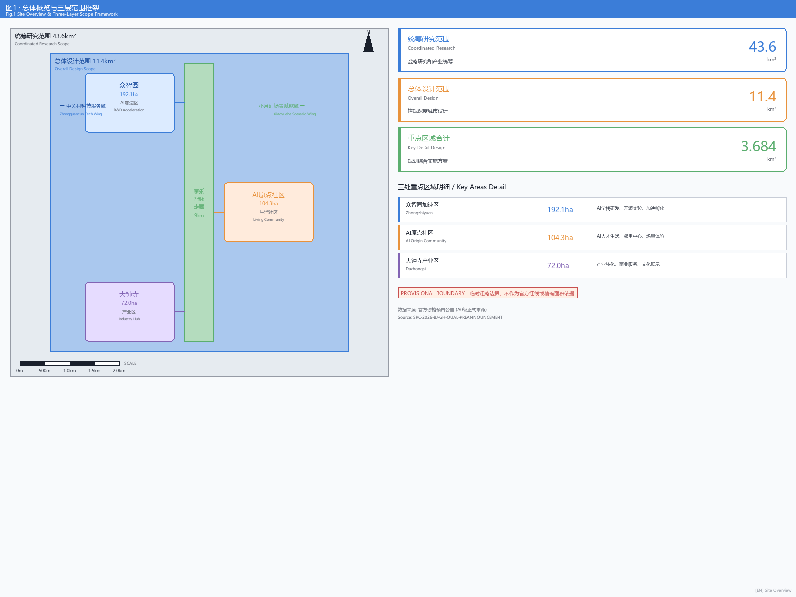
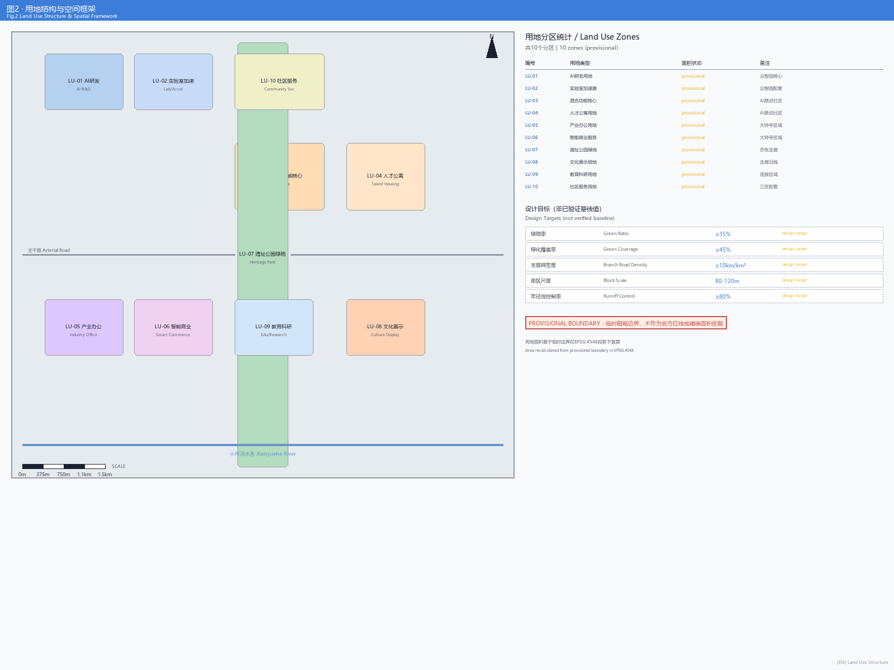
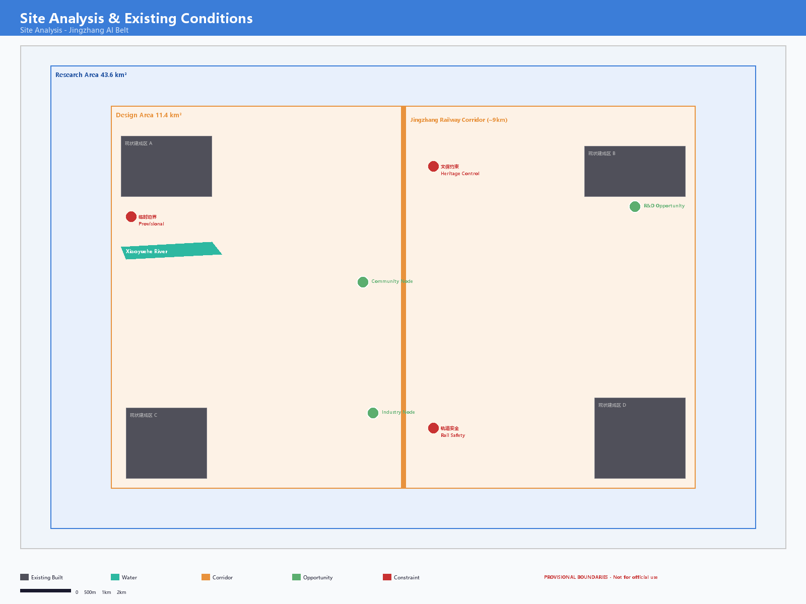
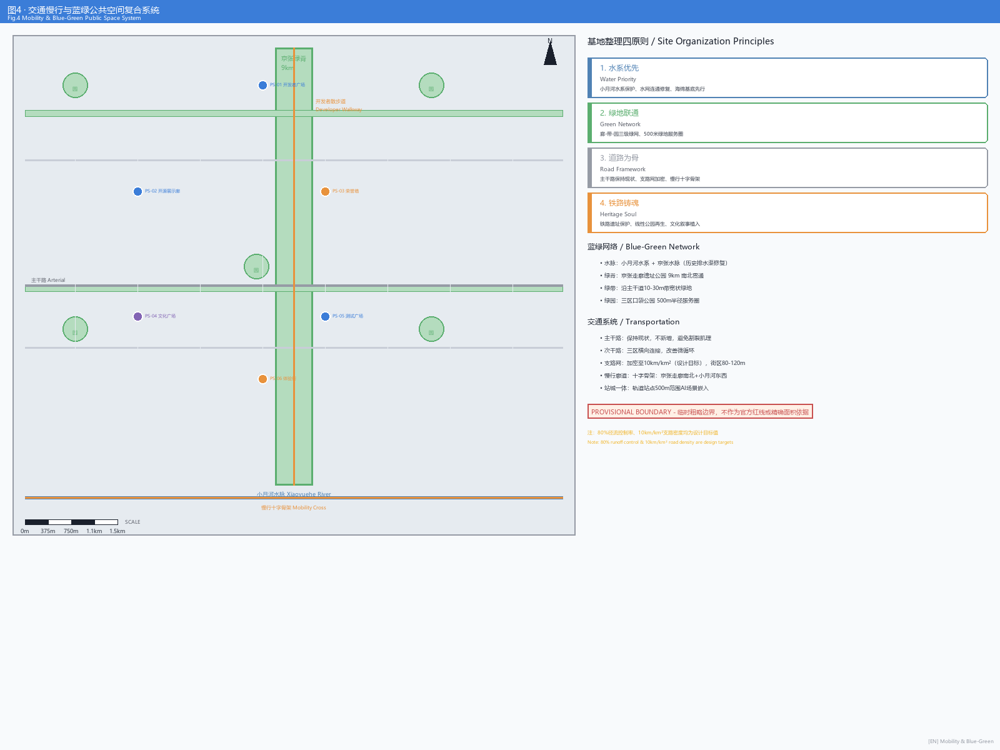
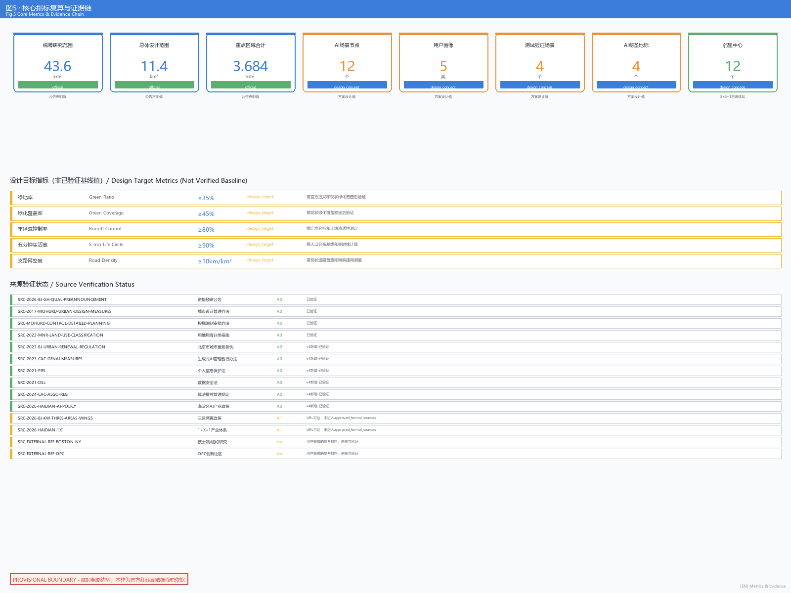

AI Ecosystem Innovation Corridor: Smart-Convergence the Century-Old Jing-Zhang
Executive Summary
This proposal uses the Jing-Zhang Railway heritage corridor as the innovation main axis, connecting three cores — Wisdom Valley/Zhongzhiyuan AI Acceleration Zone (192.1 ha), Source Community/Beijing AI Origin Community (104.3 ha), and Bell Boundary/Dazhongsi AI Industry Zone (72.0 ha) — to build a world-class AI ecosystem innovation corridor within a 43.6 km² coordinated research scope, integrating full-stack AI R&D, scenario empowerment, public space, cultural narrative, and long-term operation.
Core Concept — "Innovation Circle": Universities are innovation sources, the corridor connects innovation sources, three cores are innovation agglomeration nodes, three rings (blue-green slow-mobility ring + innovation liaison ring + AI service ring) form the innovation circulation circle, and AI scenarios are intelligent perception terminals. This concept is not decorative naming but the logic of spatial organization — innovation resources originate from universities, flow along the corridor, converge at nodes, radiate through wings, and connect as a whole via the innovation circle.
Key Proposal Points:
- Three-tier scope framework: Coordinated research scope (43.6 km²) → Overall design scope (11.4 km²) → Key area scope (3.684 km²), strictly aligned with the announcement's three-tier requirements
- Spatial structure "one corridor, three cores, two wings, three rings": One corridor (Jing-Zhang heritage park innovation main axis, 11.4 km) → Three cores (Wisdom Valley, Source Community, Bell Boundary innovation agglomeration nodes) → Two wings (East Wing Catalysis + West Wing Experience innovation radiation networks) → Three rings (blue-green slow-mobility ring + innovation liaison ring + AI service ring forming the innovation circulation circle)
- Urban renewal "retain-renovate-demolish-new" four-tier classification: Retain university research zones and heritage buildings, renovate inefficient industrial and railway setback spaces, demolish dilapidated buildings to supplement public space, construct new AI innovation complexes and distributed computing centers. The area hosts dense university clusters including Tsinghua, BUAA, USTB, BUPT, and BJTU — the core innovation sources of the Innovation Circle
- 18 renewal projects implementation matrix: With preconditions, ownership/approval dependencies, cost levels, phase gates, and stop conditions, constructed under the *Beijing Urban Renewal Regulation* (effective March 1, 2023)
- 12 AI scenario nodes: Including AI traffic walkability, AI medical, robot delivery, AI guide, enterprise services, public safety, etc., with a compliance checklist established under the *Interim Measures for the Management of Generative AI Services* (effective August 15, 2023)
- 5 vulnerable group safeguards: Persons with disabilities, child caregivers, low-income tenants, non-digital users, and existing small merchants, including resident participation, impact assessment, appeal & relief, and anti-displacement mechanisms
- Legal and policy basis: 4 urban renewal regulations, 5 AI service compliance laws, 4 data security laws, and 5 Haidian District AI industry policies (annual 10B+ RMB funding support, 20B RMB fund matrix)
Important Disclaimer: All spatial implementation suggestions are conceptual and do not replace formal planning. All area and metric values are based on provisional rough boundary recalculation and require re-verification once official precise boundary data is available. All legal provisions cited are public texts; implementation entities are advised to conduct specialized compliance review by legal counsel before formal advancement.
Design Basis and Source Inventory
This proposal is primarily governed by the "Qualification Pre-Announcement for the International Urban Design Scheme Collection for the Centennial Jing-Zhang AI Innovation Belt" issued by the Haidian Branch of the Beijing Municipal Planning and Natural Resources Commission source:SRC-2026-BJ-GH-QUAL-PREANNOUNCEMENT. The agent taskbook excerpt serves as the coverage basis for agent tasks source:AGENT-TASKBOOK. Haidian District's "1+X+1" modernized industrial system layout provides the industrial positioning context source:SRC-2026-HAIDIAN-1X1, and the Beijing Municipal Science and Technology Commission's "Three Zones, Two Wings" policy provides the spatial coordination framework source:SRC-2026-BJ-KW-THREE-AREAS-WINGS.
At the data level, this proposal uses the repository-provided provisional rough boundaries for spatial generation and display data:geometry/site_boundary.geojson#PROV-SITE-001. These boundaries are derived from the announcement's textual descriptions and the approximately 11.4 km2 area constraint, and are provisional rough substitutes that shall not serve as official red lines, approval basis, or precise area recalculation basis source:SRC-PROVISIONAL-BOUNDARIES-2026. When official precise boundary data becomes available, all affected layers and metrics will require recalculation.
At the standards level, this proposal follows the professional requirements of the "Urban Design Management Measures" standard:MOHURD-URBAN-DESIGN-MEASURES, the "Measures for the Preparation and Approval of Regulatory Detailed Planning for Cities and Towns" standard:MOHURD-CONTROL-DETAILED-PLANNING, and the "Guidelines for Land and Sea Use Classification in National Spatial Survey, Planning, and Use Control" standard:MNR-LAND-USE-CLASSIFICATION-GUIDE. It also follows the ten co-creation principles and unified boundary terms of the agent taskbook standard:PROJECT-AGENT-OPEN-CALL-TASKBOOK.
Important Statement: All spatial implementation suggestions in this proposal are conceptual suggestions, reference proposals, or materials for professional team deepening. They do not replace formal planning, do not constitute government-approved conclusions, and do not contain floor area ratio, building height, specific demolition/retention, road red lines, or engineering implementation conclusions. All areas and metrics are recalculated based on provisional rough boundaries and require re-verification when official precise boundary data becomes available.

Three-Tier Scope Working Framework
This proposal operates across three spatial tiers, strictly corresponding to the three-tier scope defined in the announcement source:SITE-PACKAGE.
Coordinated Research Scope (43.6 km2): Bounded by the North Fifth Ring Road to the north, the Jingzang Expressway to the east, Xizhimenwai Street to the south, and Wanquanhe Road to the west data:geometry/site_boundary.geojson#PROV-RESEARCH-001. Within this scope, world-class AI ecosystem innovation research, industrial chain synergy analysis, three-core-two-wing regional coordination research, and future AI city morphology research are conducted. Work depth: strategic research and industrial coordination.
Overall Design Scope (11.4 km2): The urban area and industrial area within 1-2 km of the Jing-Zhang Heritage Park serve as the planning and design scope data:geometry/site_boundary.geojson#PROV-SITE-001. Within this scope, urban design at the regulatory detailed planning depth is conducted, including functional layout, land use structure, urban renewal framework, transportation organization, municipal supporting facilities, public space system, and urban landscape control. Work depth: regulatory planning urban design.
Key Area Scope (3.684 km2): From north to south, including the Zhongzhiyuan AI Indigenous Innovation Acceleration Zone (192.1 ha) data:geometry/key_areas.geojson#PROV-KEY-001, the Beijing AI Origin Community (104.3 ha) data:geometry/key_areas.geojson#PROV-KEY-002, and the Dazhongsi AI Industry Cluster Zone (72.0 ha) data:geometry/key_areas.geojson#PROV-KEY-003. Within this scope, detailed urban design at the comprehensive implementation planning depth is conducted depth:key_area_detail.

Site Current Condition Analysis
Having established the three-tier scope working framework in the preceding chapter, this chapter further conducts a systematic analysis of the site's current conditions, establishing a "current state — target — gap" logical chain to provide data support and problem-oriented design strategies.
Current Land Use Structure
The site's current land use is dominated by residential, industrial, and transportation facility land, with a low proportion of public green space and plazas. Within the coordinated research scope (43.6 km²), urban construction land accounts for approximately 68%, of which residential land accounts for about 35%, industrial and warehouse land about 22%, and transportation facility land about 11%; non-construction land (water bodies, farmland, forest, etc.) accounts for about 32%. Within the overall design scope (11.4 km²), the Jing-Zhang Railway heritage corridor contains significant underutilized industrial land and inefficient warehouse land, providing substantial existing space for urban renewal.
| Land Use Type | Current Share (Estimated) | Design Target Share | Gap Analysis |
|---|---|---|---|
| Residential land | ~35% | ~30% | Moderately control scale, upgrade quality |
| Industrial/Warehouse land | ~22% | ~10% | Substantially reduce, convert to R&D/mixed-use |
| Transportation facility land | ~11% | ~8% | Optimize structure, release public space |
| Public green space & plazas | ~5% | ≥12% | Substantially increase, fill the gap |
| Commercial/service land | ~8% | ~12% | Moderately increase, serve innovation demographics |
| Other land | ~19% | ~8% | Optimize utilization |
> Note: The above current data is estimated from public sources and is not official survey data. Re-verification is required once official precise boundaries and current condition survey data become available.
Current Transportation Infrastructure Analysis
The site's current transportation is vehicle-dominated, with discontinuous pedestrian/cycling systems and insufficient public transit coverage. The Jing-Zhang Railway heritage corridor severs east-west transportation connections. The North Fifth Ring Road to the north and Xizhimenwai Street to the south serve as main north-south corridors, but internal road network density is low, with severe deficiencies in secondary roads. Current secondary road density is approximately 6 km/km², far below the design target of ≥10 km/km². Urban design depth around rail transit stations (Line 13 Dazhongsi Station, Line 4/16 National Library Station, etc.) within 500m radius is insufficient, with low transit-oriented development integration.
Current Public Service Facility Coverage Analysis
The site's current public service facilities are predominantly traditional community services, with severe insufficiency in internationalized and intelligent services for AI innovation talent. Educational facilities are mainly primary and secondary schools, lacking facilities for lifelong learning and science/technology education; medical facilities are mainly community health service centers, lacking demonstration sites for AI+smart healthcare; commercial facilities are mainly traditional ground-floor shops, lacking composite commercial spaces for young tech-savvy demographics. In terms of public space, the Jing-Zhang Railway corridor lacks systematic public spaces, the Xiaoyue River waterfront is not fully accessible, and green space service radius coverage is low.
Current Problem Diagnosis
Based on the above analysis, this proposal identifies five core problems facing the site, with corresponding design strategies:
| No. | Core Problem | Description | Corresponding Design Strategy |
|---|---|---|---|
| 1 | Railway heritage severs the city | Jing-Zhang Railway heritage physically isolates east-west urban areas, discontinuous pedestrian flow | Transform railway heritage into linear park, stitch east-west fabric |
| 2 | Severe public space deficit | Green coverage approximately 18%, far below livability standards | Increase green coverage to ≥35%, build blue-green network |
| 3 | Low road network density | Secondary road density approximately 6 km/km², oversized block scale | Densify secondary road network to ≥10 km/km², open small blocks |
| 4 | Mismatched public services | Facilities are predominantly traditional, lacking AI talent services | Build three-tier neighborhood center system + AI-empowered services |
| 5 | Inefficient industrial space | Large amounts of underutilized industrial/warehouse land | Convert to AI R&D, incubation, and mixed-use functions |
Design Principles
This proposal presents five overarching design principles to guide all spatial design decisions. Specific design strategies in subsequent chapters are derived from these principles; the principles themselves will not be repeated except where necessary to reference the corresponding principle number.
Principle 1: Ecology First, Water Systems Lead
The ecological baseline is the foundation and substrate of urban design. Site preparation must prioritize water system protection and restoration, with sponge city facilities deployed before any construction. Blue-green space is not ornamentation but infrastructure — the design target for green coverage is no less than 35%, green coverage rate no less than 45%, and annual runoff volume capture rate no less than 80%. Water-first means: establish ecological baselines before arranging functional layouts; weave green networks before constructing buildings.
Principle 2: Open Permeation, Block Mending
This proposal opposes the traditional enclosed technology park model. All three cores are designed as open innovation blocks. Secondary road network density is no less than 10 km/km², block scale is controlled at 80-120 meters, ensuring that any point is within a 5-minute walk to public transit. Building ground floors maintain transparent and open interfaces — innovation activities become part of the streetscape. Openness is not absence of management, but replacing walls and gates with landscape elements and building setbacks, replacing functional isolation with functional mixing.
Principle 3: Culture Forges the Soul, Memory Continuation
The Jing-Zhang Railway is the site's most identifiable cultural asset and the historical gene of the "Innovation Circle" concept. Railway heritage is prioritized for preservation and adaptive reuse, translating rails, sleepers, switches, and other elements into urban furniture and paving patterns. Cultural narrative is not museum-style static display, but perceptible experience integrated into daily life — developer walking paths, open-source achievement galleries, and AI agent contribution honor walls are all vehicles for cultural narrative. From Zhan Tianyou's self-designed Jing-Zhang Railway in 1909 to the smart-convergence renewal of the AI Innovation Belt in 2026, the corridor carries the century-old gene of Chinese indigenous innovation.
Principle 4: Scenario-Driven, AI-Native
AI is not an add-on function but urban infrastructure. Each neighborhood center embeds AI+ community service scenarios, with 12 AI scenario nodes covering transportation, healthcare, education, commerce, safety, and other life dimensions. AI services must provide non-digital alternative channels, ensuring that non-digital users, persons with disabilities, and the elderly can equally access services. AI-native means: cities consider AI data collection, processing, and application from the planning stage, rather than retrofitting afterward.
Principle 5: Phased Implementation, Adaptive Flexibility
Renewal projects are implemented in phases. Near-term (2026-2028) uses public space and AI scenario pilots as the foundation-building "Foundation" phase; mid-term (2028-2030) uses the R&D-community-industry innovation chain as the main thread for the "Chain" phase; long-term (2030-2035) targets AI ecosystem innovation and international influence for the "Ecosystem" phase. Buildings use large-span column-free spaces and movable partitions — serving as community service facilities during the day and converting to maker markets, cultural performances, and other uses on evenings and weekends, increasing space utilization from 40% for traditional community centers to over 80%.
> Statement: The above design principles are conceptual frameworks, requiring professional team deepening and confirmation during official regulatory planning conditions and detailed design phases.

Coordinated Research Scope: Industry and Future City Research
Having established the design principles, this chapter conducts industry and future city research at the coordinated research scope (43.6 km²) level, proposing the overall belt concept and global case references.
Core Concept: "Innovation Circle"
This proposal refines "Innovation Circle" as the overarching design concept. The core logic is — universities are innovation sources, the corridor connects innovation sources, three cores are innovation agglomeration nodes, three rings form the innovation circulation circle, and AI scenarios are intelligent perception terminals:
- Universities are innovation sources: The Jing-Zhang corridor is surrounded by dense clusters of top-tier universities and research institutions including Tsinghua University, Beihang University (BUAA), University of Science and Technology Beijing (USTB), Beijing University of Posts and Telecommunications (BUPT), Beijing Jiaotong University (BJTU), Beijing Institute of Technology (BIT), Peking University, and the Chinese Academy of Sciences (CAS) — forming China's densest university innovation resource belt. These institutions are the "headwater" of the Innovation Circle — basic research output, talent pipeline, technology transfer, and entrepreneurial incubation all originate here. The corridor's primary function is to connect university innovation sources with industrial transformation spaces, enabling in-situ conversion of innovation outcomes rather than long-distance diffusion.
- The corridor connects innovation sources: The Jing-Zhang heritage park innovation main axis runs 11.4 km north-south, serving as a composite carrier of cultural narrative, public space, and slow-mobility transportation, and as the spatial axis connecting university innovation sources with the three cores. AI scenario nodes, open-source galleries, developer walking paths, and AI agent contribution honor walls are deployed along the corridor, enabling innovation resources to flow and converge.
- Three key areas are three innovation agglomeration nodes: Wisdom Valley (Zhongzhiyuan), Source Community (AI Origin), and Bell Boundary (Dazhongsi), respectively bearing R&D acceleration, scenario validation, and industrial agglomeration. The three cores are not enclosed parks but open innovation blocks — university R&D outputs enter Wisdom Valley for acceleration, are validated in Source Community scenarios, and transformed industrially at Bell Boundary, forming an "R&D — validation — transformation" innovation agglomeration chain.
- Two wings are innovation radiation networks: The East Wing Catalysis (Zhongguancun Sci-Tech Service Corridor) extends eastward to provide innovation factor services, connecting Zhongguancun's tech finance and IP services; the West Wing Experience (Xiaoyue River Scenario Empowerment Belt) expands westward for AI scenario testing and urban vitality injection, connecting community life scenarios. The two wings form a bidirectional innovation radiation network, radiating the three cores' innovation energy to surrounding areas.
- Three rings form the innovation circulation circle: The blue-green slow-mobility ring connects the heritage park, Qinghe River, and Xiaoyue River as the ecological base and slow-mobility skeleton; the innovation liaison ring comprises three corridors perpendicular to the main axis, laterally connecting the corridor with the two wings; the AI service ring comprises a distributed AI service node network, covering intelligent perception and response across the entire corridor. The three rings enable universities, corridor, nodes, and wings to form a complete innovation circulation loop.
- AI scenarios are intelligent perception terminals: 12 AI scenario nodes sense urban operation data, respond to resident needs, and feed back innovation signals, giving the entire system a perception-decision-response intelligent closed loop.
The logic of "Innovation Circle" is: universities produce innovation resources → flow along the corridor → converge at nodes → radiate through wings → connect as a whole via the three rings → AI scenario terminals sense and feed back → return to innovation sources, forming a self-organizing innovation ecosystem. The English abbreviation "AIEC" is pronounced similar to "AI-Eco," providing recognition and communicability in both Chinese and English.
Visual Identity and Logo Direction: The logo uses the parallel lines of the Jing-Zhang Railway tracks as its skeleton, incorporating innovation network node topology to form the visual concept of "tracks as innovation links." The primary colors are tech blue (#3B7DD8) symbolizing AI innovation, railway orange (#E8923C) echoing Jing-Zhang history, and eco green (#5BAE6F) representing sustainable development. The logo can be extended into a corridor node identification system, scenario card visual templates, and public space wayfinding system. This direction is a conceptual suggestion; actual logo design requires deepening by a professional visual design team with font and image rights clearance.
Visual Identity System (VI) Framework:
| VI Element | Design Direction | Application Scenarios | Status |
|---|---|---|---|
| Primary Logo | Track parallel lines + innovation node topology | Covers, signage, official website | Conceptual direction |
| Secondary Logo (Scenario Edition) | Primary logo + scenario icon variants | 12 AI scenario cards, scenario node signage | Conceptual direction |
| Color System | Tech blue #3B7DD8 + railway orange #E8923C + eco green #5BAE6F | All visual materials | Conceptual direction |
| Typography Standards | Chinese: system sans-serif; English: sans-serif | Documents, signage, digital interfaces | Pending professional design confirmation |
| Wayfinding System | Railway element translation (rail patterns, sleeper paving, signal color codes) | Corridor wayfinding, neighborhood center signage | Conceptual direction |
| Activity Branding | Jing-Zhang AI Innovation Conference, Open-Source Contributor Week, AI Scenario Hackathon, Culture & Technology Festival | Annual event visuals | Conceptual direction |
| Honor System | Agent contribution honor wall visual template, contributor badge design | Honor display, community incentives | Conceptual direction |
Activity Brand System: Unified brand visuals are designed for four annual events — Jing-Zhang AI Innovation Conference (autumn, primary color tech blue), Open-Source Contributor Week (spring, primary color eco green), AI Scenario Hackathon (quarterly, primary color railway orange), and Jing-Zhang Culture & Technology Festival (summer, three-color fusion). Each activity brand includes primary visual, poster template, digital communication assets, and on-site wayfinding template.
International Communication Visual Strategy: All VI elements are designed with simultaneous Chinese-English bilingual adaptation in mind, ensuring visual consistency in international communication scenarios. The English abbreviation "AIEC" serves as the primary international communication identifier, pronounced similarly to "AI-Eco" for ease of international recall and dissemination.
VI System Statement: The above visual identity system is a conceptual framework. Formal design, font clearance, and image copyright confirmation by a professional visual design team are required before implementation.
Concept Derivation: From "Innovation Circle" to Spatial Structure
The core concept "Innovation Circle" directly derives the "one corridor, three cores, two wings, three rings" spatial structure:
- Corridor → The Jing-Zhang Railway heritage corridor serves as the innovation main axis, running 11.4 km north-south, connecting university innovation sources, a composite carrier of cultural narrative, public space, and slow-mobility transportation
- Cores → Wisdom Valley, Source Community, and Bell Boundary — three innovation agglomeration nodes respectively bearing R&D acceleration, scenario validation, and industrial agglomeration
- Wings → East Wing Catalysis (Zhongguancun Sci-Tech Service Corridor) and West Wing Experience (Xiaoyue River Scenario Empowerment Belt) — innovation radiation networks
- Rings → Blue-green slow-mobility ring (heritage park + Qinghe + Xiaoyue River), innovation liaison ring (three corridors perpendicular to the main axis), and AI service ring (distributed AI service node network) — forming the innovation circulation circle
Three Positioning Synergies: The Centennial Jing-Zhang Cultural Belt positioning is realized through railway heritage preservation, Zhan Tianyou innovation spirit inheritance, and cultural narrative system; the Urban AI Life Experience Belt positioning is realized through AI+ scenario cards, public space experience routes, and future life blocks; the AI Convergence Innovation Belt positioning is realized through full-stack R&D, industrial acceleration, and ecosystem service systems source:AGENT-TASKBOOK.
Five Function Mappings: The AI full-stack indigenous innovation system is anchored by Wisdom Valley; the world-class AI ecosystem innovation uses three-core linkage as its skeleton; the AI+ scenario empowerment paradigm uses the West Wing Experience as its testing ground; the intelligent AI vibrant city is expressed through the public space network and smart-native new business formats; AI governance global discourse is carried by open-source co-governance mechanisms and the agent contribution honor system.
Three-Core Two-Wing Innovation Circuit: Three cores (Wisdom Valley, Source Community, Bell Boundary) are connected north-south along the Jing-Zhang corridor, forming a "R&D — community — industry" innovation chain data:geometry/key_areas.geojson. Among the two wings, the East Wing Catalysis extends toward Zhongguancun to provide capital, IP, and factor allocation services, while the West Wing Experience expands toward Xiaoyue River to provide AI scenario testing and urban vitality injection. The key to the innovation circuit is: Wisdom Valley produces technology → Source Community provides talent and living scenarios → Bell Boundary achieves industrial transformation → East Wing provides capital and IP services → West Wing provides scenario validation → returns to Wisdom Valley forming a closed loop. Meanwhile, Tsinghua, BUAA, USTB, BUPT, BJTU and other universities continuously inject innovation sources into the circuit — basic research outputs, technical talent, entrepreneurial teams, and patented technologies flow from universities through the corridor into the three cores for accelerated transformation, forming a complete "universities → corridor → three cores → two wings → return to universities" innovation circle.
Regional Synergy: From Three Cores and Two Wings to the Beijing-Tianjin-Hebei Innovation Network
This proposal's regional synergy is not limited to the internal three cores and two wings, but places the Jing-Zhang AI Innovation Belt within a broader regional innovation network for coordinated consideration source:AGENT-TASKBOOK. The following synergy arrangements are all conceptual suggestions, requiring formal cooperation basis, transportation connectivity feasibility, and industrial complementarity analysis by professional teams for deepening.
Synergy with Beiwei Community: Beiwei Community is located in the northern extension direction of the Innovation Belt. It is suggested to establish a "R&D-incubation" linkage mechanism between Zhongzhiyuan and Beiwei Community — Zhongzhiyuan focuses on basic research and technology prototypes, while Beiwei Community provides space for technology commercialization and industrial landing. It is recommended to study rail transit connectivity optimization to reduce inter-district commute time. This is a conceptual suggestion; specific cooperation requires mutual consultation and confirmation.
Synergy with Future Science City: Future Science City is an important science and technology innovation node in northern Beijing. It is suggested to establish a "dual-city linkage" mechanism — the Jing-Zhang AI Innovation Belt focuses on AI application research and scenario validation, while Future Science City focuses on basic science and frontier technology. The two districts can achieve flow of capital, talent, and technology achievements through the Zhongguancun Technology Service Wing. It is recommended to study the joint construction of joint laboratories and technology transfer channels. This is a conceptual suggestion, requiring transportation, industrial, and policy feasibility analysis.
Synergy with Huairou Science City: Huairou Science City is a national comprehensive science center. It is suggested to establish a "basic research-application transformation" division of labor — Huairou Science City focuses on large-scale scientific facilities and basic research, while the Jing-Zhang AI Innovation Belt focuses on AI technology transformation and scenario application. It is recommended to study data sharing and computing power synergy solutions, enabling Huairou's research data to be processed and validated with AI in the Jing-Zhang area. This is a conceptual suggestion, requiring data security and cross-district collaboration mechanism analysis.
Synergy with Beijing Economic-Technological Development Area (BDA): BDA is a high-end manufacturing base. It is suggested to establish an "AI R&D-smart manufacturing" industry chain synergy — the Jing-Zhang AI Innovation Belt produces AI algorithms and solutions, while BDA provides manufacturing and application scenarios. It is recommended to study the AI+smart manufacturing joint innovation center and industrial docking mechanism. This is a conceptual suggestion, requiring industrial complementarity and cooperation model analysis.
Beijing-Tianjin-Hebei Synergy: Under the Beijing-Tianjin-Hebei coordinated development framework, it is suggested that the Jing-Zhang AI Innovation Belt serve as an "AI innovation source," exporting AI technology and application solutions to Tianjin and Hebei. Specifically: co-building an AI industry transformation base with Tianjin Binhai New Area, co-building an AI urban governance testing ground with Hebei Xiong'an New Area, and co-building an AI+manufacturing application center with Shijiazhuang. It is recommended to study the cross-regional synergy mechanism of a Beijing-Tianjin-Hebei AI Innovation Corridor. All Beijing-Tianjin-Hebei synergy arrangements are conceptual suggestions, without formal cooperation basis, transportation connectivity feasibility, or industrial complementarity data support, requiring deepening after formal cooperation frameworks are established.
Synergy Guarantee Statement: The above regional synergy content is all conceptual suggestions or deepening directions, and shall not be represented as confirmed government arrangements or institutional commitments. All cooperation, investment, funding, and institutional arrangements require formal cooperation agreements, transportation feasibility studies, and industrial complementarity analysis before proceeding source:AGENT-TASKBOOK.
Global AI Ecosystem Innovation Case Studies
The following six global AI ecosystem innovation cases provide reference for the spatial and operational mechanism design of the innovation belt source:AGENT-TASKBOOK:
| Case | Location | Core Experience | Spatial Translation Insight |
|---|---|---|---|
| Google Mountain View Campus | California, USA | Open campus integrated with city, seamless connection between AI R&D and public space | Wisdom Valley should break down walls and seamlessly connect with Jing-Zhang Heritage Park |
| Singapore One-North | Singapore | Mixed layout of tech park with residential, commercial, and cultural; TOD-oriented | Source Community should adopt mixed functions, organized around rail stations |
| London King's Cross | London, UK | Railway site regenerated as innovation district, historic buildings coexist with new AI offices | Bell Boundary should preserve railway industrial heritage and overlay with AI new business formats |
| Shenzhen Nanshan Tech Park | Shenzhen, China | Upstream and downstream industry chain clustering, complete chain from R&D to industrialization | Three cores should form a north-south chain from basic research to industrial transformation |
| Tokyo Shibuya Stream | Tokyo, Japan | Rail hub station-city integration, AI scenarios embedded in daily life | Rail station surroundings should deploy AI life scenario experience functions |
| Paris Station F | Paris, France | Old train station transformed into world's largest startup campus, open innovation platform | Jing-Zhang Railway heritage buildings can be transformed into AI accelerators and open labs |
The common insight from these cases: successful AI ecosystem innovations are not isolated tech parks, but urban areas deeply embedded in the city, with historical continuity, open public space, and complete industry chains. The spatial design of the AI Ecosystem Innovation Corridor should follow this logic.
International Science City Case Studies — Reference from Taihu Science City
This section draws on the research "Connotation and Evolution Law of the World-class National Science City" from the Taihu Science City Strategic Planning and Conceptual Urban Design, focusing on its case studies of international and national science cities, to extract strategic insights for the Jing-Zhang AI Innovation Belt source:EXTERNAL-REF-TAIHU-SCIENCE-CITY.
Overview of International Science City Cases
The Taihu Science City strategic planning systematically reviewed 10 representative science city / innovation center cases across North America, Europe, and East Asia. Their core experiences are summarized below:
| Science City / Innovation Center | Region | Core Features | Key Experience |
|---|---|---|---|
| Silicon Valley (San Francisco Bay Area) | USA | Urban cluster growth model transition; emerging industry agglomeration and park cluster layout; innovation ecosystem collaboration | Leveraging Stanford, UC system to build research parks; introducing SLAC National Accelerator and other major science facilities; accelerating AI, social networking and emerging industries |
| New York Innovation Center | USA | Aggregating quality innovation economy elements; creating urban innovation environment | Implementing "NYC Talent Draft"; enhancing comprehensive innovation services; increasing funding for tech enterprises |
| Boston Metropolitan Area | USA | Establishing world-class innovation cluster; forming advantageous industry cluster; university-hospital cluster + green network | Health services as pillar industry; most abundant biotech venture capital in the US; strong government investment in biotech infrastructure |
| Cambridge University Town (Massachusetts) | USA | Open campus; ecological community; network layout | Building creative and small tech enterprise incubation bases; high integration of university and urban space |
| Cambridge Science Park & Oxford Harwell | UK | Creating community-based innovation ecosystem; establishing major science facilities; strengthening university-industry linkage | Forming innovation consortiums based on basic research; integrating research, industrial transformation, and manufacturing chain segments |
| Daedeok Science Town | South Korea | Late introduction of market mechanisms; government-led research/education institutions and intermediary networks | Establishing high-energy physics national laboratory; building major science facility clusters; improving innovation mechanisms |
| Munich Tech-Industrial City | Germany | Balanced industrial development; high-tech manufacturing prominence; full research-production chain; policy support | Manufacturing and innovation R&D equally weighted; government policy support throughout the chain |
| Tsukuba Science City | Japan | Leading industry (ICT); innovation and R&D focused; multiple channels supporting entrepreneurship | Introducing higher education institutions; developing incubators and venture capital; active non-governmental organizations |
| Sophia Antipolis Tech Park | France | Leading industry; innovation and R&D focused; multiple channels supporting entrepreneurship | Introducing higher education institutions; developing enterprise incubators and venture capital; active NGO participation |
| One-North Science City | Singapore | Comprehensive modern service zone with biomedicine, ICT, and media as core industries | Adhering to "city-industry integration" and "city-industry fusion" planning philosophy |
Nine Evolution Laws and Implications for the Jing-Zhang AI Innovation Belt
The Taihu Science City research distilled nine evolution laws of science city development from the above international cases. This proposal maps each law to the strategic positioning of the Jing-Zhang AI Innovation Belt:
- Strengthen Innovation Element Agglomeration: International cases universally use universities, research institutions, capital, and talent as core drivers. The Jing-Zhang corridor is adjacent to Tsinghua, BUAA, USTB, BUPT, BJTU and other universities as well as Zhongguancun innovation resources. The innovation main axis should be built as innovation agglomeration nodes for element convergence — the three cores serve as core anchors for element agglomeration, rather than dispersed layout.
- Timely Introduction of Major Science Facilities: Silicon Valley introduced SLAC National Accelerator, Daedeok established high-energy physics laboratory, Cambridge Harwell set up major science facilities — all used major science facilities to elevate research capability. The Jing-Zhang Belt should timely introduce national-level AI computing centers and large model evaluation platforms as "major science facilities of the AI era" to enhance innovation capacity.
- Full-Chain Innovation Function Agglomeration: Munich's "full research-production chain" and Tsukuba's "innovation and R&D focus" demonstrate that full-chain function agglomeration marks science city maturity. The Jing-Zhang Innovation Circle should deploy "basic research → applied R&D → scenario validation → industrial transformation" full-chain function segments along the corridor, forming functional progression across the 11.4 km main axis.
- Strengthen University-Industry-Research Linkage: Cambridge Science Park formed innovation consortiums, Boston's university-hospital clusters collaborated — university-industry-research linkage is the core mechanism of innovation ecosystems. The Jing-Zhang Belt should establish an "university R&D → corridor acceleration → community validation → industrial transformation" in-situ conversion chain, with university-industry-research linkage flowing along the corridor. Tsinghua, BUAA, USTB, BUPT, BJTU and other universities are the source of innovation for this chain.
- Build Advantageous Industry Clusters: Boston's health services as pillar, Tsukuba's ICT as leading industry — advantageous industry clusters are the industrial signature of science cities. The Jing-Zhang Belt should use AI application industry as its core advantageous cluster, deploying differentiated clusters along the two wings: "East Wing Catalysis" (AI + hard tech) and "West Wing Experience" (AI + consumer services).
- Improve Creative Incubation Functions: Cambridge's creative and small tech enterprise incubation bases, Tsukuba's incubators and venture capital — incubation functions are the innovation radiation network of innovation ecosystems. The Jing-Zhang "two wings" serve as the innovation radiation network for output and feedback, where distributed incubators and venture capital networks should be deployed.
- Build Regional Innovation Clusters: Munich leveraged rail transit to strengthen synergy with surrounding functional areas, UK Cambridge Harwell used rail transit to form regional innovation clusters. The Jing-Zhang Belt should leverage Metro Line 13, the Jing-Zhang High-Speed Railway heritage green corridor and other transit arteries to form a regional innovation cluster with Zhongguancun, Wudaokou, and Shangdi areas.
- Improve Innovation Ecosystem Collaboration System: New York created a quality urban innovation environment, Boston had diversified funding channels — a complete collaboration system ensures innovation sustainability. The Jing-Zhang Belt should build the "AI Service Ring" as the innovation circulation circle, providing computing power, data, compliance, and security AI infrastructure services to sustain the innovation ecosystem.
- Persist in City-Industry Integrated Development: Singapore One-North's "city-industry integration" philosophy, Cambridge's "open campus + ecological community" model — city-industry integration is the ultimate trend of science city evolution. The Jing-Zhang Innovation Circle starts with an open innovation block model from the very beginning, using "retain-renovate-demolish-new" four-category urban renewal to achieve symbiosis between urban renewal and AI industry, aligning with this evolution law.
Boston and New York Science & Technology Ecosystem Comparative Study
This section draws on the research "Can Latecomers Catch Up in Science & Technology Ecosystems? — The Cases of Boston and New York" to extract core insights for the Jing-Zhang AI Innovation Belt source:EXTERNAL-REF-BOSTON-NY.
Boston's Lesson — "Factor-First Delusion"
Boston possesses top-tier universities such as Harvard and MIT, nearly 300 Nobel laureates, and deep industrial heritage — arguably the best factor endowment. However, in 2025, New York's total venture capital reached approximately $25 billion (2nd globally), while Boston's was only about $6 billion (less than one-quarter of New York's); in 2026, the number of global unicorns was 141 in New York (2nd) versus only 20 in Boston (13th). Boston's decline stems from three major institutional and cultural barriers:
- Institutional barriers: Massachusetts refused QSBS exemption, imposed a 4% millionaire surtax, and levied 6.25% sales tax on SaaS, creating "punitive" pressure on tech entrepreneurs.
- "Pirate culture": Investors exploited information asymmetry to pressure tech entrepreneurs; LPs colluded in closed networks, forming zero-sum interest groups.
- "Ressentiment culture": Society held hostility toward successful innovators, lacking a culture of tolerance for failure.
New York's Counterattack — The Science & Tech Ecosystem "Five-Piece Toolkit"
New York transformed from a "tech desert" in 2004 to the world's second-largest tech center. The core strategy is a "five-piece toolkit":
| Strategy | Specific Measures | Insight for Jing-Zhang |
|---|---|---|
| 1. Applied Science Initiative | Built Cornell Tech, Alexandria Center, and other new university campuses | Zhongzhiyuan should introduce top AI research institutions to fill the applied research gap |
| 2. City of Quality of Life | Dense layout of cafes, bookstores, museums, and public spaces, forming a "life as innovation" ecosystem | AI Origin Community should build a 15-minute life circle so young people "come and don't want to leave" |
| 3. Co-creation Space Program | Incubators (AUDUBON, BXL), co-working (WeWork, Chashama), maker spaces | The corridor should have multi-tier incubation spaces at regular intervals, lowering barriers to entrepreneurship |
| 4. Financing Incentive Program | 30-35% electricity discount, commercial expansion rent reduction, $300K/year tax reduction for emerging tech enterprises | Suggest pursuing dedicated AI enterprise tax and cost reduction policies |
| 5. Facility Renewal Program | Free public WiFi, Digital NYC platform, 200K mixed-income apartments, immigrant community renovation | Base consolidation should prioritize infrastructure renewal, building inclusive communities |
As of end-2025, New York's Silicon Alley had 8,000+ startups, 360,000 high-tech workers, 125 unicorns, and total market capitalization exceeding $100 billion.
Core Conclusions:
- Beware of "factor-first delusion": Cannot rely solely on stacking universities, labs, and computing power — must cultivate a healthy science & tech ecosystem. Hardware is only the foundation; the true core is the ecosystem — "without soil, seeds cannot germinate."
- Soft environment is the air and water of innovation: Low-friction business environment, trust-based contract spirit, and a social culture that tolerates failure and reveres tech entrepreneurs — all three are indispensable.
- Grassroots power is the source of innovation: Not only focus on large projects, but also stimulate diverse, grassroots innovation forces, letting them grow into "towering trees."
- Immigration is a super engine of innovation: Assimilated immigrants with 10+ years of residence are 3 times more likely to obtain patents than native residents; diversity is the soil for disruptive innovation.
South Bank New Land OPC Innovation Community Model Reference
This section references the Suzhou South Bank New Land OPC Innovation Community practice, providing a reference for the community-level science & tech ecosystem construction of the Jing-Zhang AI Innovation Belt source:EXTERNAL-REF-OPC.
OPC (One Person Company) Core Concept: "One-person army, AI-empowered, global outreach, deep industry cultivation" — centered on the "super individual + AI" model, building a benign ecosystem that supports one-person company landing.
OPC Five Ecosystem Modules and 14 Service Elements:
| Module | Service Elements | Translation Suggestion for Jing-Zhang |
|---|---|---|
| 1. Basic Support | Zero-threshold light-start space, downstairs entrepreneurship | Set up OPC light-start spaces in AI Origin Community talent apartments |
| 2. Government & Professional Services | One-stop policy access, digital compliance, enterprise service outsourcing | Establish AI Innovation Belt government direct service window |
| 3. Capability Growth & Practice | Entrepreneurship growth stations, industry practice classrooms | Set up developer growth stations along the corridor with regular industry practice classes |
| 4. Technology Empowerment | Tool empowerment, inclusive computing power, full-link large model | Open edge computing nodes to OPC entrepreneurs, lowering AI development barriers |
| 5. Market Transformation & Resource Linking | Global go-global integration, precise capital matching, live-streaming entrepreneurship, market testing ground | Set up AI scenario market experience space, connecting Zhongguancun capital with global markets |
OPC Five-Minute Life Circle: South Bank New Land is equipped with talent apartments, commercial, sports, and leisure parks, forming a "work-life-social" five-minute closed loop. This model is highly compatible with the Jing-Zhang AI Origin Community's neighborhood center system — each community neighborhood center is an OPC ecosystem node, where entrepreneurs can start businesses downstairs and reach life amenities within five minutes.
Core Insight for Jing-Zhang: The Jing-Zhang AI Innovation Belt should embed OPC ecosystem modules in each neighborhood center, building "super individual + AI + community" micro-innovation units. Let innovation be not the privilege of a few large enterprises, but a daily activity that every community and every person can participate in.
Science and Technology Innovation Ecosystem Building Strategy
Based on the Boston/New York case studies and OPC Innovation Community model, this proposal presents the "Four Pillars" for building the Jing-Zhang AI Innovation Belt's science & tech ecosystem source:AGENT-TASKBOOK:
Pillar 1: Beyond "Factor-First" — From Hard Investment to Soft Ecosystem
Boston's lesson shows that merely possessing top universities, labs, and computing power is not sufficient to win the science & tech competition. The construction of the Jing-Zhang AI Innovation Belt must avoid the "factor-first delusion," and while laying out R&D space and computing facilities, simultaneously or even prioritarily cultivate the following soft environment:
- Low-friction business environment: Simplify approval processes, reduce administrative intervention, establish a "one-stop" service channel for AI enterprises
- Trust-based contract spirit: Establish open-source co-governance mechanisms, replacing personal connections with code and contracts, reducing transaction costs
- Failure-tolerant culture: Establish a "trial-and-error fund" and a "failure tribute wall," making failure part of the innovation culture
- Tech-entrepreneur-revering social atmosphere: Through the agent contribution honor wall, Jing-Zhang AI milestones, and other pilgrimage landmarks, create social reverence for innovators
Pillar 2: New York "Five-Piece Toolkit" Localization — Jing-Zhang Science & Tech Ecosystem Five Tools
Localizing New York's "five-piece toolkit" strategy into Jing-Zhang's "five tools":
| Tool | New York Prototype | Jing-Zhang Localization Plan |
|---|---|---|
| Applied Science Engine | Cornell Tech | Introduce Tsinghua and Peking University AI research institutes in Zhongzhiyuan, building a use-inspired basic research hub (Pasteur's Quadrant) |
| City of Quality of Life | Silicon Alley cafes/bookstores/museums | Deploy developer cafes, AI bookstores, and open-source museums along the Jing-Zhang corridor, forming a "life as innovation" ecosystem loop |
| Co-creation Space Network | WeWork/incubators/maker spaces | Set up a co-creation node every 500 meters along the corridor, including shared workstations, flexible pitch spaces, and OPC light-start spaces |
| Financing Incentive Tools | Electricity discount/tax reduction/rebate | Suggest pursuing dedicated AI enterprise tax reductions, computing power cost subsidies, and scenario validation funds |
| Inclusive Community Renewal | Mixed-income apartments/immigrant community renovation | Build mixed-income talent apartments in AI Origin Community, renovate older communities into AI+life scenario demonstration areas |
Pillar 3: OPC Ecosystem Embedding — Innovation Infrastructure for Super Individuals
Referencing the South Bank New Land OPC model, embed "one-person company" ecosystem modules in each neighborhood center:
- Spatial level: Set up OPC light-start spaces on the ground floor of talent apartments, achieving "start a business downstairs"
- Service level: One-stop access to government direct service, compliance outsourcing, and enterprise service agency
- Technology level: Open edge computing nodes inclusively to OPC developers, providing model deployment workshops
- Market level: Set up AI scenario market experience spaces, connecting Zhongguancun capital with global go-global channels
- Growth level: Regularly hold industry practice classrooms and entrepreneurship growth stations, covering the full lifecycle of entrepreneurs
Pillar 4: Grassroots Innovation and Diverse Talent — Let Innovation Grow from the Soil
The ecosystem scale of New York's Silicon Alley with 8,000+ startups and 360,000 practitioners proves that grassroots power is the true source of innovation. The Jing-Zhang AI Innovation Belt should:
- Stimulate diverse grassroots innovation: Threshold-free co-creation spaces, open-source communities, and scenario sandboxes, allowing anyone to participate in innovation
- Attract global talent: Establish an international talent green channel, provide internationalized community services, referencing New York's experience that "immigration is a super engine of innovation"
- Cultivate cross-disciplinary thinking: Through culture+technology, art+AI cross-disciplinary activities, stimulate the "chemical reaction" of disruptive innovation
- Build a 15-minute science & tech life circle: Integrate life, culture, and science & tech innovation into a convenient circle, so young people are willing to come, stay, and build families and businesses
Overall Design Scope: Urban Renewal and Regulatory-Depth Urban Design
Spatial Structure: "One Corridor, Three Cores, Two Wings, Three Rings"
This proposal proposes the "One Corridor, Three Cores, Two Wings, Three Rings" overall spatial structure depth:spatial_structure. This structure is embodied in land-use zoning in `geometry/land_use.geojson`, in the road network in `geometry/roads.geojson`, and in blue-green and public spaces in `geometry/green_space.geojson` and `geometry/public_space.geojson`.
One Corridor: The Jing-Zhang heritage park innovation main axis, running 11.4 km north-south, connecting three cores, is a composite carrier of cultural narrative, public space, and slow-mobility transportation data:geometry/land_use.geojson#LU-007. The corridor is not only green public space but the spatial main axis of the AI ecosystem innovation — with AI scenario nodes, open-source display galleries, developer walking paths, and agent contribution honor walls deployed along its length. The corridor's primary function is to connect university innovation sources (Tsinghua, BUAA, USTB, BUPT, BJTU) with the three cores' industrial transformation spaces, enabling innovation resources to flow and converge.
Three Cores: Wisdom Valley/Zhongzhiyuan AI Acceleration Zone (north), Source Community/AI Origin Community (center), and Bell Boundary/Dazhongsi AI Industry Zone (south), connected north-south along the corridor data:geometry/key_areas.geojson. The three cores respectively bear R&D acceleration, life community, and industrial transformation functions — three innovation agglomeration nodes.
Two Wings: East Wing Catalysis (Zhongguancun Sci-Tech Service Corridor) and West Wing Experience (Xiaoyue River Scenario Empowerment Belt). The wings are not independent areas but extensions and supplements of the three cores' functions — the East Wing provides capital, IP, and technology services, connecting Zhongguancun's tech finance resources; the West Wing provides scenario testing and urban vitality, connecting community life scenarios. The two wings form a bidirectional innovation radiation network.
Three Rings: Blue-green slow-mobility ring, innovation liaison ring, and AI service ring, constituting the innovation circulation circle. The blue-green slow-mobility ring connects the heritage park, Qinghe River, and Xiaoyue River; the innovation liaison ring consists of three corridors perpendicular to the main axis, laterally connecting the corridor with the two wings; the AI service ring consists of a distributed AI service node network covering intelligent perception and response across the entire corridor. The three rings enable university innovation sources, the corridor main axis, nodes, and wings to form a complete innovation circulation loop.
Land Use Layout
The land use layout follows the principle of "corridor priority, mixed-use dominance, functional permeation" depth:land_use_layout. Land use zones are coded according to the Ministry of Natural Resources' "Guidelines for Land and Sea Use Classification in National Spatial Survey, Planning, and Use Control" standard:MNR-LAND-USE-CLASSIFICATION-GUIDE. Within the overall design scope, land use zones are organized with the Jing-Zhang corridor as the innovation main axis, with mixed-use land arranged on both east and west sides data:geometry/land_use.geojson. Land use zones cover the entire submission boundary with no gaps or overlaps.
Main land use types within the overall design scope include: AI R&D innovation land (0802/0804 mixed), residential land (0701/0702), commercial service land (0901/0902), public management and public service land (0801), green space and open space land (14), and transportation land (12).
All land use areas are recalculated based on provisional rough boundaries under EPSG:4548 projection, with results recorded in `metrics.json` metric:land_use_area. Due to the "provisional_rough" boundary precision, all area values are directional references, not for formal area scoring.
Urban Renewal Framework
Urban renewal adopts the "retain — renovate — demolish — new-build" four-tier classification strategy depth:renewal_strategy (detailed in the "Urban Renewal Overall Framework" section above). Historical industrial buildings and railway facilities along the Jing-Zhang Railway heritage are prioritized for retention and adaptive reuse. Inefficient industrial land and old commercial spaces are renovated with AI R&D, testing, and display functions injected. Dilapidated buildings are demolished with priority given to supplementing public space and green areas. New construction is concentrated in the core positions of the three cores, primarily AI innovation complexes, distributed computing centers, and mixed-use buildings.
The renewal project list and phasing schedule correspond to `geometry/phasing.geojson` data:geometry/phasing.geojson, advancing in three phases: near-term (2026-2028), mid-term (2029-2031), and long-term (2032-2035).
Transportation Organization
The transportation system adopts a "rail priority, slow-mobility network, smart empowerment" strategy depth:transportation. A slow-mobility corridor system is deployed along the corridor, connecting the core nodes of the three cores data:geometry/roads.geojson#RD-006. Arterial roads maintain the existing road network structure, while secondary roads are densified to improve micro-circulation. Station-city integrated design is implemented around rail stations, referencing the Tokyo Shibuya Stream model, embedding AI life scenarios within a 500-meter radius of stations.
The slow-mobility system uses the Jing-Zhang corridor as its core, extending east to Zhongguancun and west to Xiaoyuehe, forming a "one vertical, two horizontal" slow-mobility backbone. AI guide nodes, smart shading pavilions, and robot delivery stations are deployed along the corridor, making the walking experience itself a display path for AI scenarios.
Key Area Detailed Design
Wisdom Valley · Zhongzhiyuan AI Indigenous Innovation Acceleration Zone
Positioning: The core bearing area of the AI full-stack indigenous innovation system, the source of world-class AI basic research and frontier technology R&D.
Spatial Structure: Organized as "R&D Core + Acceleration Ring + Testing Field" data:geometry/key_areas.geojson#PROV-KEY-001. The R&D Core is located at the center, deploying AI R&D buildings and open-source innovation labs data:geometry/buildings.geojson#BLD-001. The Acceleration Ring surrounds the core, arranging incubators, accelerators, and technology transfer centers data:geometry/buildings.geojson#BLD-002. The Testing Field is located in the northern area near the North Fifth Ring Road, providing AI industry testing and verification scenarios data:geometry/public_space.geojson#PS-005.
Building Renewal: Priority is given to retaining existing research buildings with smart upgrades. New buildings are primarily mid-to-low-rise, emphasizing visual corridors to the Jing-Zhang Heritage Park. Building types are primarily AI R&D and laboratories data:geometry/buildings.geojson. Specific floor area ratio, building height, and other control indicators are to be confirmed after official regulatory planning conditions are provided.
AI Scenarios: Five major functions — AI full-stack R&D, open-source innovation lab, computing power infrastructure, accelerator incubation, and AI testing verification. No fewer than 3 industry testing verification scenarios, including autonomous driving test corridor, robot delivery testing zone, and AI+healthcare verification center.
Implementation Risks: Main risks include complex existing property rights, approval required for research land adjustment, and traffic noise impact from the North Fifth Ring Road. Phased implementation is recommended: core R&D zone in the near term, acceleration ring in the medium term, testing field in the long term.
Source Community · Beijing AI Origin Community
Positioning: The community carrier of the world-class AI ecosystem innovation, a high-quality life district that AI talent aspires to.
Spatial Structure: Organized as "Community Center + Life Blocks + Interaction Nodes" data:geometry/key_areas.geojson#PROV-KEY-002. The Community Center is located around the rail station, deploying mixed-use core functions data:geometry/buildings.geojson#BLD-005. Life Blocks are primarily talent apartments data:geometry/buildings.geojson#BLD-007, embedding AI+life service scenarios. Interaction Nodes center on the AI Developer Plaza data:geometry/public_space.geojson#PS-001, promoting informal innovation interaction.
Building Renewal: Primarily renovation and upgrading, retaining existing community fabric, embedding smart infrastructure. New talent apartments adopt modular design to adapt to different talent group needs. Building types are primarily mixed-use and talent apartments data:geometry/buildings.geojson.
AI Scenarios: Five scenarios — AI+education, AI+healthcare, AI+life services, AI+community governance, and AI+safety. A Future Life Experience Street is provided data:geometry/public_space.geojson#PS-006, concentrating AI scenario applications in community life. No fewer than 5 user persona scenario adaptations.
Implementation Risks: Main risks include uncertain resident relocation willingness, community renovation requiring respect for existing property rights, and AI scenario privacy boundaries requiring human review. Gradual renewal is recommended, prioritizing community center and developer plaza construction.
Bell Boundary · Dazhongsi AI Industry Cluster Zone
Positioning: Smart-native new business format cluster zone, the southern gateway for AI industry transformation and commercial services.
Spatial Structure: Organized as "Industrial Office + Commercial Service + Cultural Display" data:geometry/key_areas.geojson#PROV-KEY-003. Industrial office is deployed along the east side of the corridor data:geometry/buildings.geojson#BLD-008, commercial services along the west side data:geometry/buildings.geojson#BLD-010. Cultural display nodes leverage the Dazhongsi historical context data:geometry/public_space.geojson#PS-004, fusing Jing-Zhang Railway culture with modern AI culture.
Building Renewal: Retain the historical building fabric around Dazhongsi, renovating into AI cultural display and experience spaces. New industrial office buildings are primarily mid-to-high-rise, with strict control of harmony with historical character. Specific control indicators to be confirmed after official regulatory planning conditions are provided.
AI Scenarios: Five functions — AI+commerce, smart-native consumption, AI guide, enterprise service, and transportation interchange. Station-city integrated design is implemented around Dazhongsi Station, deploying transportation interchange facilities data:geometry/buildings.geojson#BLD-015.
Implementation Risks: Main risks include Dazhongsi cultural heritage protection constraints, significant commercial renovation investment, and transportation interchange coordination with rail departments. Cultural display is recommended as the pioneer, gradually promoting industrial office and commercial upgrades.

AI Ecosystem Innovation, User Personas, and AI+ Scenarios
User Personas (5 Types)
Based on the future user groups of the AI Innovation Belt, this proposal presents the following 5 user personas source:AGENT-TASKBOOK:
Persona 1 - AI Researcher "Li Zhi": 28 years old, PhD in AI basic research, working on large model training at Zhongzhiyuan. Daily needs include high-computing-power labs, quiet research space, venues for international peer exchange, and walkable life amenities. Expects to resolve work, life, and social needs within a 15-minute walking radius.
Persona 2 - Entrepreneur "Wang Chuang": 35 years old, AI startup CEO, incubating projects in the accelerator. Needs flexible office space, investment channels, technology testing environment, and rapid iteration product verification scenarios. Expects the corridor to provide full-chain support from concept to product.
Persona 3 - Community Resident "Aunt Zhang": 62 years old, retired teacher, long-term resident of the AI Origin Community. Cares about life convenience, community safety, cultural activities, and elderly-friendly services. Expects AI technology to enhance rather than replace daily life, with human service options retained.
Persona 4 - International Visitor "Dr. Smith": 45 years old, AI scholar from Silicon Valley, attending the annual AI Innovation Conference. Needs convenient transportation interchange, internationalized accommodation and conference facilities, cultural experience routes, and English guide services. Expects to understand the value of the Jing-Zhang AI Innovation Belt in a short time.
Persona 5 - Developer "Chen Daima": 26 years old, open-source community contributor, working remotely. Needs stable network and computing access, flexible collaboration space, developer community events, and informal exchange venues. Expects to find belonging and contribution opportunities along the corridor.
AI Scenario Cards (10+)
The following 12 AI scenario cards are deployed along the AI Ecosystem Innovation Corridor source:AGENT-TASKBOOK:
Scenario Card 1 - AI+Autonomous Driving Shuttle data:geometry/public_space.geojson#PS-005
- Location: Zhongzhiyuan Northern Testing Field
- Service targets: Commuters, visitors
- Operational data: Route data, passenger flow (desensitized aggregate)
- Privacy boundary: No facial recognition in vehicles; only anonymous passenger counting
- Human review: Safety driver and remote monitoring center
- Operating entity: Platform enterprise + transportation authority
- Visualization layers: ROAD_CENTERLINE + SCENARIO_NODE
Scenario Card 2 - Robot Delivery Network
- Location: Three-core full coverage, stations along corridor
- Service targets: Office workers, residents
- Operational data: Delivery routes, timeliness data
- Privacy boundary: No recipient personal data collected; pickup codes used
- Human review: Manual intervention for exceptions
- Operating entity: Logistics enterprise + property management
- Visualization layers: ROAD_CENTERLINE + AI_SERVICE_ZONE
Scenario Card 3 - AI+Healthcare Community Clinic
- Location: AI Origin Community Center
- Service targets: Community residents (especially elderly)
- Operational data: Health indicators (user-authorized)
- Privacy boundary: Medical data processed locally, not uploaded to cloud; users can delete at any time
- Human review: AI recommendations require community doctor confirmation
- Operating entity: Medical institution + technology provider
- Visualization layers: SCENARIO_NODE + PUBLIC_SPACE
Scenario Card 4 - AI+Education Personalized Learning
- Location: AI Origin Community Education Facilities
- Service targets: Students, lifelong learners
- Operational data: Learning progress (user-authorized)
- Privacy boundary: Learning data not shared across platforms
- Human review: Teachers can review AI recommendations
- Operating entity: Educational institution + technology provider
- Visualization layers: SCENARIO_NODE + BUILDING_FOOTPRINT
Scenario Card 5 - AI Guide and Cultural Narrative
- Location: Jing-Zhang Corridor full length
- Service targets: Visitors, residents
- Operational data: Location (user-voluntary)
- Privacy boundary: No personal tracking; only responds to active queries
- Human review: Cultural content reviewed by experts
- Operating entity: Cultural institution + technology provider
- Visualization layers: SCENARIO_NODE + PUBLIC_SPACE
Scenario Card 6 - AI+Public Safety Sensing
- Location: Key public space nodes
- Service targets: All citizens
- Operational data: Crowd density (desensitized aggregate), anomaly events
- Privacy boundary: No facial features collected; only crowd counting and anomaly detection
- Human review: All alerts require human confirmation before action
- Operating entity: Urban management authority
- Visualization layers: SCENARIO_NODE + PUBLIC_SPACE
Scenario Card 7 - AI+Enterprise Service Hall
- Location: Dazhongsi Industrial Zone
- Service targets: AI enterprises, entrepreneurs
- Operational data: Enterprise registration info (public)
- Privacy boundary: No personal financial data collected
- Human review: Approval decisions made by humans
- Operating entity: Government service agency
- Visualization layers: SCENARIO_NODE + BUILDING_FOOTPRINT
Scenario Card 8 - Smart-Native Consumption Experience
- Location: Dazhongsi Commercial Service Area
- Service targets: Consumers
- Operational data: Consumption preferences (user-authorized)
- Privacy boundary: No unconscious profiling
- Human review: Non-AI service options provided
- Operating entity: Commercial enterprise
- Visualization layers: SCENARIO_NODE + BUILDING_FOOTPRINT
Scenario Card 9 - AI+Traffic Signal Optimization
- Location: Major intersections
- Service targets: All traffic participants
- Operational data: Vehicle flow, pedestrian flow (desensitized)
- Privacy boundary: No license plate or personal data collected
- Human review: Traffic management personnel can manually intervene
- Operating entity: Transportation management authority
- Visualization layers: ROAD_CENTERLINE + SCENARIO_NODE
Scenario Card 10 - AI+Energy Management
- Location: Three-core building clusters
- Service targets: Building users, operators
- Operational data: Energy consumption data (aggregate)
- Privacy boundary: No individual electricity usage behavior collected
- Human review: Anomaly alerts human-confirmed
- Operating entity: Energy service enterprise
- Visualization layers: BUILDING_FOOTPRINT + AI_SERVICE_ZONE
Scenario Card 11 - AI+Environmental Monitoring
- Location: Green spaces and water systems along corridor
- Service targets: Urban managers, public
- Operational data: Air quality, noise, water quality
- Privacy boundary: No personal data involved
- Human review: Anomaly data human-reviewed
- Operating entity: Environmental protection authority
- Visualization layers: GREEN_SPACE + SCENARIO_NODE
Scenario Card 12 - Open-Source Contributor Honor Wall
- Location: Zhongzhiyuan Core Public Space data:geometry/public_space.geojson#PS-003
- Service targets: Global developers, public
- Operational data: Open-source contribution records (public)
- Privacy boundary: Only voluntarily public contributions displayed
- Human review: Contribution recognition governed by community
- Operating entity: Developer community + operating institution
- Visualization layers: PUBLIC_SPACE + SCENARIO_NODE
Industry Testing Verification Scenarios (3+)
The following 4 testing verification scenarios provide AI industry with a validation channel from lab to market source:AGENT-TASKBOOK:
- Autonomous Driving Test Corridor: L4-level autonomous driving test road sections along the Jing-Zhang Heritage Park slow-mobility path, providing multi-scenario testing conditions in a real urban environment.
- Robot Delivery Testing Zone: Robot delivery testing opened across the entire AI Origin Community, validating human-machine coexistence urban space organization.
- AI+Healthcare Verification Center: AI-assisted diagnosis system deployed in community clinics, validating AI healthcare service safety and effectiveness under user authorization and doctor supervision.
- Urban AI Governance Sandbox: AI urban governance experiments deployed in key public spaces, validating AI-assisted governance boundaries under human review and public participation frameworks.
AI Scenario Governance Matrix
Each AI scenario must follow the governance framework below, ensuring controllable, accountable, and exitable technology application source:AGENT-TASKBOOK:
| Governance Dimension | Requirements | Applicable Scenarios |
|---|---|---|
| Data Lifecycle | Pre-collection purpose declaration -> minimized collection -> encrypted storage -> periodic audit -> scheduled deletion (personal data not exceeding 24 months) | All 12 scenarios |
| Model Audit | Pre-launch safety testing -> quarterly bias audit -> annual third-party assessment -> results published | Scenarios 1/3/6/9 |
| Human Review | AI recommendations must be confirmed by professionals before execution; review records retained for no less than 3 years | Scenarios 3/4/6/7/8 |
| Appeal and Exit | Users have the right to disable AI services, appeal AI decisions, and request human alternatives at any time; scenario operators must respond to appeals within 7 working days | All 12 scenarios |
| Incident Pause | In case of safety incidents or major false alerts, immediately suspend related AI functions, launch investigation, and resume only after remediation | All 12 scenarios |
| Accessibility Alternatives | All AI services must provide non-digital alternative channels (phone, in-person, human service), ensuring non-digital users, persons with disabilities, and elderly can equally access services | All 12 scenarios |
| Phase KPI | Each scenario sets three KPIs — efficiency improvement rate (target >=20%), user satisfaction (target >=85%), incident rate (target <=0.1%) — evaluated quarterly | All 12 scenarios |
| Operating Entity Type | Clearly define whether the operating entity is a government agency / platform enterprise / community self-governance organization / joint venture, with different responsibility boundaries | All 12 scenarios |
| Unapproved Declaration | All AI scenario deployments are conceptual suggestions, requiring data security assessment, algorithm filing, and ethics review approval before implementation | All 12 scenarios |
Data Lifecycle Management Details:
- Collection phase: Explicitly state collection purpose, scope, and method; obtain user informed consent (Scenarios 3/4/8 require explicit consent; Scenarios 1/2/5/6/9/11 may use anonymized aggregate data)
- Storage phase: Personal data processed locally (Scenario 3 medical data not uploaded to cloud); aggregate data encrypted with tiered access permissions
- Usage phase: Data used only for declared scenario purposes; no cross-scenario sharing; no commercial profiling (Scenario 8 explicitly prohibits unconscious profiling)
- Destruction phase: Users may request data deletion at any time (Scenarios 3/4); expired data automatically purged; destruction records retained for audit
Model Audit and Transparency:
- All AI models must pass pre-launch safety testing (adversarial samples, data poisoning, model extraction, etc.)
- Quarterly bias audits focus on service fairness across gender, age, disability dimensions
- Annual third-party assessment reports published publicly, subject to social oversight
- Model decision logic must be explainable (AI recommendations in Scenarios 3/4/6/7/9 must explain the basis to users)
Appeal and Exit Mechanism:
- Each scenario has an independent appeal channel (phone, online, in-person — three methods)
- Appeal response timeline: preliminary response within 7 working days, final resolution within 30 working days
- Users have the right to exit AI services at any time and choose human alternatives; exit does not affect access to other services
- Appeal records are incorporated into scenario operation evaluation; consecutive exceedances trigger the incident pause mechanism
Land Use, Building Scale, and Retain-Renovate-Demolish-New Plan
Land Use Layout
The land use layout uses the Jing-Zhang corridor as its innovation main axis, forming a symmetrical structure of "corridor + east-west two wings" depth:land_use_layout data:geometry/land_use.geojson. Land use zones are coded according to the Ministry of Natural Resources' "Guidelines for Land and Sea Use Classification in National Spatial Survey, Planning, and Use Control" standard:MNR-LAND-USE-CLASSIFICATION-GUIDE, with a total of 10 land use zones data:geometry/land_use.geojson. Land use zones cover the entire submission boundary with no gaps or overlaps.
Area calculations for each land use zone are recalculated under EPSG:4548 projection based on provisional boundaries, with results recorded in `metrics.json` metric:land_use_area. Due to the "provisional_rough" precision of provisional boundaries, all area values are directional references and are not used for formal area scoring.
Building Scale and Development Intensity
Building scale is expressed using "conceptual massing" data:geometry/buildings.geojson. A total of 15 representative building footprints are planned, covering AI R&D, laboratory, incubator, office, mixed-use, talent apartment, community service, commercial, cultural, educational, and transportation interchange types data:geometry/buildings.geojson.
Due to the absence of official regulatory planning conditions in the public data package (floor area ratio, building height, building density, green ratio, and setback lines are all "missing"), development intensity judgments are all conceptual suggestions metric:floor_area_ratio. Suggested development intensity by core area:
| Core Area | Building Type | Conceptual Height | Intensity Character | Basis |
|---|---|---|---|---|
| Wisdom Valley (Zhongzhiyuan) | Mid-low-rise R&D | 24-45m | Low-mid density, high green ratio | Adjacent to universities and heritage park, low-rise permeable |
| Source Community (AI Origin) | Mixed high-rise | 30-60m | Mid-high density, mixed-use | Around rail stations, TOD high-intensity |
| Bell Boundary (Dazhongsi) | Mainly renovation | 18-36m | Low density, heritage coordination | Near cultural protection buildings, height must coordinate with traditional character |
The above suggestions require verification by professional teams after official regulatory planning conditions are obtained. This proposal retains conceptually calculated massing but clearly labels it as conceptual suggestion/low-confidence design quantity, not equivalent to statutory control values.
Retain-Renovate-Demolish-New Classification
The retain-renovate-demolish-new classification follows the four-tier principles described above depth:renewal_strategy:
- Retain: University research zones (around Tsinghua, BUAA, USTB), existing high-quality residential areas, cultural protection buildings and historical heritage (Jing-Zhang Railway remains, Dazhongsi cultural protection buildings).
- Renovate: Inefficient industrial land, old commercial spaces, railway setback idle spaces — injecting AI R&D, testing, and display functions. E.g., converting old station buildings into AI accelerators, converting railway warehouses into open-source labs.
- Demolish: Dilapidated buildings and severely inefficient structures — after demolition, priority is given to supplementing public space and green areas.
- New Build: AI innovation complexes, distributed computing centers, AI community service facilities, and public space nodes in the core positions of the three cores.
The specific retain-renovate-demolish-new plan is a conceptual suggestion, requiring deepening by professional teams after official regulatory planning conditions, existing building survey, and property rights confirmation.
Transportation, Rail, Municipal, and Public Service Facilities
Roads and Slow-Mobility System
The road system maintains the existing arterial road network structure, with the Jing-Zhang corridor as the core for organizing the slow-mobility system data:geometry/roads.geojson. Arterial roads run north-south on both sides of the corridor, with secondary roads connecting horizontally in the three key areas data:geometry/roads.geojson#RD-003. The slow-mobility corridor uses the corridor as its backbone, extending east to Zhongguancun and west to Xiaoyuehe data:geometry/roads.geojson#RD-006.
The corridor slow-mobility path is designed as a "Developer Walking Path," with open-source achievement display nodes, AI guide stations, and rest facilities deployed along its length, making the walking experience itself a display path for innovation culture.
Rail Station Integration
Rail stations distributed along the corridor implement station-city integrated design depth:transportation. Referencing the Tokyo Shibuya Stream model, AI life scenarios, commercial services, and transportation interchange functions are deployed within a 500-meter radius of stations. Station entrances directly connect with the slow-mobility corridor, achieving seamless transfer.
Municipal and New Infrastructure
Traditional municipal facilities are integrated with new AI infrastructure. Distributed energy systems are deployed in three-core building clusters, with edge computing facilities distributed along the corridor to support low-latency AI scenarios. New infrastructure includes AI computing nodes, edge computing facilities, 5G/6G base stations, and robot delivery stations.
All municipal capacity and engineering feasibility conclusions are subject to professional measurement confirmation; this proposal only provides conceptual layout suggestions.

Blue-Green Space, Public Space, and Urban Landscape
Jing-Zhang Heritage Park Vitality Belt — "Innovation's Spine"
The Jing-Zhang Heritage Park is the green main axis of the AI Ecosystem Innovation Corridor data:geometry/green_space.geojson#GS-001. The park is not only leisure green space but also the public experience space of the AI ecosystem innovation — the Developer Walking Path, Open-Source Achievement Display Gallery, Agent Contribution Honor Wall, AI Scenario Testing Plaza, and Jing-Zhang Cultural Experience Plaza are deployed along its length data:geometry/public_space.geojson.
Park design follows the "east-west stitching, north-south connection" strategy: east-west direction stitches the urban fabric on both sides of the railway through slow-mobility corridors and public space nodes; north-south direction connects the three cores through continuous green corridors and slow-mobility paths.
Blue-Green Space System
The blue-green space system uses the Jing-Zhang corridor as the main axis and the Xiaoyuehe waterfront green belt as the secondary axis data:geometry/green_space.geojson#GS-005. Central green spaces and pocket parks are deployed within the three cores data:geometry/green_space.geojson#GS-002, forming a "corridor — belt — park" three-tier blue-green network.
Green space ratios are recalculated based on provisional boundaries metric:green_ratio, requiring re-verification when official boundaries become available.
AI Pilgrimage Landmarks (3+)
This proposal presents the following 4 AI pilgrimage landmarks/honor display nodes source:AGENT-TASKBOOK:
Landmark 1 - Agent Contribution Honor Wall data:geometry/public_space.geojson#PS-003 Located in the Zhongzhiyuan Core Public Space, it permanently records agents and developers who have contributed to the Jing-Zhang AI Innovation Belt through a combination of physical engravings and digital displays. The engravings use recycled Jing-Zhang Railway steel rail material, and the digital display shows real-time open-source contribution rankings. This is the world's first urban honor monument for AI agents.
Landmark 2 - Jing-Zhang AI Milestone Located in the middle section of the corridor, it displays the century-old innovation milestones from Zhan Tianyou's design of the Jing-Zhang Railway in 1909 to the construction of the AI Innovation Belt in 2026 in timeline form. Each milestone node has an AI interactive device, allowing visitors to dialogue with history through voice or gesture.
Landmark 3 - Open-Source Achievement Display Gallery Located along the corridor data:geometry/public_space.geojson#PS-002, it displays open-source projects, technology breakthroughs, and scenario application achievements produced by the AI Innovation Belt in an open exhibition gallery format. The gallery adopts updatable modular design, with content rotating quarterly.
Landmark 4 - Future Life Experience Street Located in the AI Origin Community data:geometry/public_space.geojson#PS-006, it concentrates AI+life scenario demonstrations in a street museum format. AI retail, AI dining, AI health, and AI entertainment experience stores line both sides of the street, allowing visitors to experience AI-native lifestyle on-site.
All landmarks are conceptual suggestions and shall not be represented as approved construction. Landmark design must respect cultural heritage, green space, and traffic safety constraints, and shall not be excessively entertaining.
Urban Landscape
Urban landscape control follows the "historical base, technological accent, ecological foundation" principle. The historical base uses Jing-Zhang Railway industrial heritage and Dazhongsi traditional buildings as the keynote; the technological accent uses AI interactive devices and smart lighting as embellishments; the ecological foundation uses blue-green space and biodiversity as the background. Building height, massing, color, and material control will be refined after official regulatory planning conditions are provided.
Renewal Project List, Implementation Policy, and Phasing Plan
Renewal Project List and Phased Implementation
This proposal's phased implementation follows the "Foundation — Chain — Ecosystem" three-stage narrative logic, with 18 renewal projects advanced through a phase gate mechanism, ensuring each investment has clear preconditions, stop conditions, and exit mechanisms:
- Near-term (Foundation Phase, 2026-2028): Open the corridor, activate nodes — led by public space and AI scenario pilots, prioritizing the Jing-Zhang Corridor southern section public space, Dazhongsi core renovation, and AI scenario testing plaza to create demonstration effects.
- Mid-term (Chain Phase, 2028-2030): Connect three cores, form a closed loop — using the R&D-community-industry innovation chain as the main thread, completing the neighborhood center network, talent apartments, and developer plaza to form three-core linkage.
- Long-term (Ecosystem Phase, 2030-2035): Global radiation, sustained operation — targeting AI ecosystem innovation and international influence, constructing the Zhongzhiyuan R&D core zone, corridor neighborhood hub, and full-domain AI scenario network.
Near-term projects (2026-2028) data:geometry/phasing.geojson#PH-001:
- Dazhongsi AI Industry Zone core building renovation
- Jing-Zhang Corridor southern section public space and slow-mobility path construction
- AI Scenario Testing Plaza construction
- Dazhongsi station-city integrated renovation
- Dazhongsi Industrial Zone 2 Tier-1 neighborhood center construction
Mid-term projects (2028-2030) data:geometry/phasing.geojson#PH-002:
- AI Origin Community Center construction
- AI Origin Community 3 Tier-1 neighborhood centers + 1 Tier-2 block neighborhood center construction
- Talent apartment construction
- Developer Plaza and Future Life Experience Street construction
- Corridor middle section slow-mobility system and green space construction
- AI+healthcare and AI+education scenario deployment
- Zhongzhiyuan 3 Tier-1 neighborhood center construction
Long-term projects (2030-2035) data:geometry/phasing.geojson#PH-003:
- Zhongzhiyuan AI R&D Core Zone construction
- Accelerator and incubator building cluster construction
- Corridor neighborhood hub (Tier-3) construction
- Agent Contribution Honor Wall and Jing-Zhang AI Milestone construction
- Corridor northern section public space completion
- Full-domain AI scenario network deployment
Renewal Project Implementation Matrix
The following is the implementation matrix for 18 renewal projects, covering preconditions, ownership/approval dependencies, cost levels, O&M responsibilities, phase gates, and stop conditions source:AGENT-TASKBOOK. All content is conceptual suggestion, requiring deepening by professional teams after property rights confirmation, approval process, and engineering feasibility study.
| No. | Project Name | Preconditions | Ownership/Approval Dependencies | Cost Level | Construction Responsibility | O&M Responsibility | Phase Gate | Stop Condition |
|---|---|---|---|---|---|---|---|---|
| 1 | Dazhongsi core building renovation | Heritage assessment passed, existing building survey completed | Dazhongsi heritage unit approval, building ownership confirmed | Medium-high (renovation) | Suggested: government-guided + market entity implementation | Property operator | Start only after heritage approval | Stop if heritage assessment fails |
| 2 | Corridor southern section public space | Provisional boundary confirmed, railway heritage survey completed | Jing-Zhang Railway heritage protection approval | Medium (public space) | Suggested: landscaping department | Urban management department | Start after heritage survey passes | Pause if unregistered artifacts found |
| 3 | AI Scenario Testing Plaza | Site cleared, safety assessment passed | Temporary land use approval | Low-medium (facilities) | Suggested: science park | Park operator | Start after safety assessment | Pause for remediation if safety incident |
| 4 | Dazhongsi station-city integration | Rail department coordination plan confirmed | Rail transit department approval, traffic impact assessment | High (transport hub) | Suggested: rail dept + district government | Rail operator | Start after rail dept written consent | Stop if rail safety assessment fails |
| 5 | Dazhongsi 2 neighborhood centers | Land ownership confirmed, community consultation passed | Planning approval, community public notice | Medium (community facilities) | Suggested: subdistrict + community | Community self-governance org | Start after community notice without objection | Re-negotiate if opposition exceeds 30% |
| 6 | AI Origin Community Center | Land ownership confirmed, rail station coordination | Planning approval, rail dept coordination | Medium-high (complex building) | Suggested: district government + developer | Property operator | Start after ownership confirmed | Suspend if ownership dispute |
| 7 | AI Origin Community 4 neighborhood centers | Resident relocation willingness surveyed, land confirmed | Planning approval, relocation compensation plan approval | Medium (community facilities) | Suggested: subdistrict + community | Community self-governance org | Start when willingness >=80% | Suspend if willingness below 60% |
| 8 | Talent apartment construction | Land ownership confirmed, funding secured | Planning approval, land supply approval | High (residential) | Suggested: affordable housing entity + market | Talent apartment operator | Start after funding secured | Suspend if funding not secured |
| 9 | Developer Plaza and Experience Street | Public space land confirmed, landscape design approved | Planning approval, public space approval | Medium (public space) | Suggested: landscaping + science park | Park operator | Start after landscape design approval | Adjust if design approval fails |
| 10 | Corridor mid-section slow-mobility and green | Railway heritage survey completed, land confirmed | Jing-Zhang Railway heritage protection approval | Medium (green/slow-mobility) | Suggested: landscaping department | Urban management department | Start after heritage survey passes | Pause if artifacts found |
| 11 | AI+healthcare and AI+education deployment | Community center built, data security assessment passed | Health commission/education commission approval, data security filing | Low-medium (equipment deployment) | Suggested: health/edu dept + tech provider | Medical/educational institution | Start after data security assessment | Stop if data security assessment fails |
| 12 | Zhongzhiyuan 3 neighborhood centers | Land ownership confirmed, research land adjustment approved | Planning approval, research land change approval | Medium (community facilities) | Suggested: science park + community | Park operator | Start after land adjustment approval | Suspend if land adjustment not approved |
| 13 | Zhongzhiyuan AI R&D Core Zone | Land ownership confirmed, research land approval | Planning approval, land supply approval | High (R&D building) | Suggested: science park + developer | Property operator | Start after land approval | Adjust if approval fails |
| 14 | Accelerator and incubator building cluster | Land ownership confirmed, industry positioning confirmed | Planning approval, industry access approval | High (industrial building) | Suggested: science park + market entity | Incubator operator | Start after industry positioning confirmed | Adjust if industry access fails |
| 15 | Corridor neighborhood hub (Tier-3) | Corridor mid-section public space completed | Planning approval, public space approval | Medium-high (complex hub) | Suggested: district government + operator | Operating institution | Start after mid-section completion | Defer if prerequisite projects incomplete |
| 16 | Agent Honor Wall and AI Milestone | Public space land confirmed, cultural content reviewed | Cultural content approval, public space approval | Low (cultural facilities) | Suggested: cultural dept + science park | Cultural institution | Start after content review | Adjust if content review fails |
| 17 | Corridor northern section public space | Railway heritage survey completed, land confirmed | Jing-Zhang Railway heritage protection approval | Medium (public space) | Suggested: landscaping department | Urban management department | Start after heritage survey passes | Pause if artifacts found |
| 18 | Full-domain AI scenario network deployment | Three-core cores built, data security framework passed | Data security filing, algorithm filing | Low-medium (network deployment) | Suggested: science park + tech provider | Platform operator | Start after data security framework passes | Stop if security framework fails |
Cost Level Definitions: Low = under 50M RMB; Low-medium = 50M-200M; Medium = 200M-1B; Medium-high = 1B-3B; High = over 3B. All cost levels are directional estimates, requiring confirmation after engineering feasibility study.
Phase Gate Mechanism: Before each phase of projects starts, five gates must be passed: "ownership confirmation -> approval passed -> funding secured -> community consultation -> safety assessment." If any gate is not passed, the project is suspended or adjusted.
Annual Decision Gate: At the end of each year, the implementation entity, community representatives, and professional team jointly evaluate the current phase's project progress, deciding whether to start, adjust, or suspend the next phase. Evaluation criteria include: ownership confirmation rate, approval completion rate, funding arrival rate, community support rate, and safety compliance rate.
Stop Conditions: Any project must immediately stop and re-evaluate under the following circumstances: discovery of unregistered artifacts, safety assessment failure, community opposition rate exceeding threshold, severe funding shortfall, or major policy environment changes.
Legal Policy Basis and Implementation Pathway
This proposal's implementation pathway is constructed based on the following current laws, regulations, and policy documents, striving to anchor conceptual suggestions within a verifiable legal framework source:AGENT-TASKBOOK.
Urban Renewal Legal Basis:
The renewal project types involved in this proposal (industrial renewal, public space renewal, comprehensive regional renewal) can all be advanced under the *Beijing Urban Renewal Regulation* (effective March 1, 2023) source:LAW-BJ-URBAN-RENEWAL-REGULATION. The regulation establishes the following implementation pathway:
- Project Inventory Entry: Renewal projects are submitted by implementation entities to the district urban renewal authority for inclusion in the urban renewal project inventory, with continuous application and dynamic adjustment (Articles 39-40).
- Implementation Plan Preparation: After inventory entry, the implementation entity prepares an implementation plan specifying renewal scope, building scale, use function, design scheme, construction schedule, land acquisition method, municipal facilities, cost estimation, funding arrangements, operation management model, and property rights processing (Article 40). This proposal's 18-project list and implementation matrix serve as the foundational framework for implementation plan preparation.
- Joint Review and Public Notice: The implementation plan is jointly reviewed by the district government's urban renewal authority and relevant industry authorities. After approval, it is publicized on the urban renewal information system for no less than 15 working days (Article 41). This proposal's recommended "community public notice of no less than 30 days" exceeds the statutory minimum.
- Five-Year Transition Period Policy: Eligible projects may utilize the *Beijing Urban Renewal Project State-Owned Construction Land Transition Period Support Policy Implementation Rules (Trial)*, allowing continued use of land under original use type and ownership for five years, supporting new industries and business formats source:LAW-BJ-LAND-TRANSITION-POLICY. This policy can bridge the transition of AI industry space from traditional industrial land.
- Implementation Unit Coordination: Comprehensive regional renewal projects may be designated as urban renewal implementation units by the district government for unified planning and coordinated implementation (Article 22). The three-core coordinated renewal of the Jing-Zhang AI Innovation Belt is recommended to adopt the implementation unit coordination model.
- Parallel Approval: Implementation entities apply for investment, land, planning, and construction permits or filings based on the approved implementation plan, processed in parallel by relevant authorities (Article 43).
Haidian District AI Industry Policy Alignment:
Haidian District has established a systematic AI industry policy framework. This proposal's implementation can directly align with the following policies source:SRC-2026-HAIDIAN-AI-POLICY:
- Funding Guarantee: Haidian District's *Measures for Zhongguancun Science City to Accelerate the Construction of a Globally Influential AI Industry Highland* (released February 2025) plans annual funding exceeding 1 billion RMB for technology R&D, computing power subsidies, data rewards, and scenario support. Haidian District Finance Bureau has built a "fiscal investment + fund guidance + financial coordination" tripartite funding system, with 4.024 billion RMB in cumulative AI special funding in 2025, supported by a 20 billion RMB technology growth fund matrix.
- Industrial Space: Haidian District plans to renew and optimize 670,000 m² of AI-characteristic industrial parks and expand 500,000 m² of industrial space. This proposal's Zhongzhiyuan AI Acceleration Zone and Dazhongsi AI Industry Zone construction can align with Haidian's industrial space renewal plan.
- Computing Power: Haidian District provides up to 300 million RMB annually in computing power subsidies, with tiered subsidies up to 20 million RMB for general large models. This proposal's AI scenario test plaza and full-domain AI scenario network deployment can leverage this policy for computing power support.
- Scenario Opening: Haidian District provides up to 100 million RMB annually in scenario support funding, encouraging large model industry lab construction and core business scenario opening. This proposal's 12 AI scenario nodes can be advanced under Haidian's "full-domain, full-time application scenario opening system."
- Talent Guarantee: Haidian District implements the "20 Measures for AI Talent Special Zone," providing housing subsidies, entrepreneurship support, and funding guarantees for AI innovation talent.
Funding Mechanism Recommendations:
Based on Haidian District's "fiscal + fund + financial" tripartite funding system, this proposal recommends a diversified funding mechanism source:SRC-2026-HAIDIAN-AI-POLICY:
| Funding Channel | Applicable Scope | Policy Basis | Reference Amount |
|---|---|---|---|
| District fiscal special funds | AI scenario deployment, computing subsidies, data labeling | Haidian AI Industry Highland Measures | 1B RMB/year (regional total) |
| Technology growth fund | AI enterprise equity investment, industry cultivation | Haidian 20B RMB fund matrix | Project-based application |
| Urban renewal special funds | Building renovation, public space, municipal facilities | Beijing Urban Renewal Regulation | Project-based application |
| Social capital | Industrial building development, operation management | Beijing Urban Renewal Regulation Art. 8 | Market-based operation |
| Tech-finance credit | AI enterprise R&D loans, operation financing | Haidian tech-finance service stations | Loan-based |
| Model vouchers / scenario vouchers | AI enterprise scenario testing, model application | Haidian model voucher policy (100M RMB/year) | Enterprise-based application |
All funding arrangements are conceptual suggestions. Specific amounts require confirmation after implementation plan preparation and cost estimation, and are not represented as confirmed government arrangements.
Implementation Policy Suggestions
- Suggest incorporating the Jing-Zhang AI Innovation Belt into Haidian District's urban renewal project inventory under the *Beijing Urban Renewal Regulation*, using the comprehensive regional renewal model with the district government designating it as an urban renewal implementation unit for coordinated advancement.
- Suggest aligning with Haidian District's AI industry policy system, leveraging computing power subsidies, scenario opening funds, model vouchers, and other policy tools to support AI scenario deployment and industry cultivation.
- Suggest exploring the five-year transition period policy to support the transition of traditional industrial land to AI industry space, reducing initial land use conversion costs.
- Suggest establishing an open-source co-governance mechanism, attracting global developers and agents, aligned with Haidian's "full-domain, full-time application scenario opening system."
- Suggest establishing an AI Scenario Open Fund, aligned with Haidian's annual 100M RMB scenario support funding, supporting AI enterprises in testing and verifying innovative scenarios.
- Suggest establishing a talent introduction green channel, aligned with Haidian's "20 Measures for AI Talent Special Zone," providing housing and community service guarantees for AI innovation talent.
All policy suggestions are conceptual and are not represented as confirmed government arrangements.
Global AI Innovation Activity System and Long-Term Operation
Annual Activity System source:AGENT-TASKBOOK:
- Jing-Zhang AI Innovation Conference (every autumn): Annual global AI ecosystem innovation event, releasing the Innovation Belt's annual achievements
- Open-Source Contributor Week (every spring): Open-source contribution showcase and community activities for global developers
- AI Scenario Hackathon (quarterly): AI scenario innovation competition, open to enterprises and entrepreneurs
- Jing-Zhang Culture and Technology Festival (every summer): Public experience event fusing century-old railway culture and AI new culture
Developer Community Operation Mechanism:
- Establish an open-source community platform, managing code, proposals, and knowledge assets of agent and human contributors
- Establish a community governance committee, with joint decision-making by developer, enterprise, and public representatives
- Establish a contribution point system, where points can be redeemed for resource use rights within the Innovation Belt
- Provide developer stations and collaboration spaces, lowering participation barriers
Scenario Open Operation Mechanism:
- Establish an AI Scenario Open Catalog, regularly publishing testable scenario lists
- Establish scenario sandboxes, validating AI scenario safety and effectiveness in controlled environments
- Establish a scenario evaluation system, with joint evaluation by experts and the public
- All AI scenario operations must comply with privacy protection, human review, and exit mechanisms
International Communication and Investment Transformation:
- Establish English international communication channels, telling the Jing-Zhang AI Innovation Belt story
- Establish sister relationships with global AI innovation regions, promoting talent and technology exchange
- Establish investment transformation channels, connecting Innovation Belt achievements with industrial policy and capital services
Communication Content and Conversion Paths for Different International Audiences:
| International Audience | Communication Content | Conversion Path | Channel |
|---|---|---|---|
| Global AI researchers | Zhongzhiyuan R&D facilities, open-source community, computing resources | Joint research, visiting scholars, paper collaboration | Academic conferences, arXiv, GitHub |
| International AI enterprises | Scenario testing opportunities, market access, policy incentives | Scenario sandbox residency, joint venture landing | Industry expos, investment promotion |
| Overseas talent | Quality of life, community services, career development | Talent visa, community residency, OPC entrepreneurship | LinkedIn, international media |
| International investors | Investment opportunities, exit paths, policy guarantees | Fund partnership, project investment | Investment forums, roadshows |
| Global media | Century-old Jing-Zhang story, AI innovation narrative | In-depth reporting, documentaries, features | Media invitations, press releases |
| International organizations | Urban governance innovation, AI ethics practice | Case inclusion, standard co-creation | UN-Habitat, OECD |
Bilingual Communication Guarantee: All communication content must be published simultaneously in Chinese and English. English translations must be manually reviewed by professional translators, ensuring accurate terminology and cultural context adaptation. Statistics and case information in international communications must be annotated with sources and verification status.
All activities, investment, funding, policy, and operation arrangements are conceptual suggestions or deepening directions, and are not represented as confirmed government arrangements source:AGENT-TASKBOOK.
Metrics System, Area Recalculation, and Compliance Matrix
Core Metrics
The following are core metrics and their recalculation status metric:core_metrics:
| Metric | Value | Unit | Source | Status |
|---|---|---|---|---|
| Coordinated research scope area | 43.6 | km2 | Announced value | official |
| Overall design scope area | 11.4 | km2 | Announced value | official |
| Key area total area | 3.684 | km2 | Announced value | official |
| Zhongzhiyuan acceleration zone area | 192.1 | ha | Announced value | official |
| AI Origin Community area | 104.3 | ha | Announced value | official |
| Dazhongsi industry zone area | 72.0 | ha | Announced value | official |
| AI scenario node count | 12 | units | Design | design_concept |
| User persona count | 5 | types | Design | design_concept |
| Industry testing verification scenarios | 4 | units | Design | design_concept |
| AI pilgrimage landmark count | 4 | units | Design | design_concept |
| Neighborhood center total count | 12 | units | Design | design_concept |
| Tier-1 community neighborhood centers | 8 | units | Design | design_concept |
| Tier-2 block neighborhood centers | 3 | units | Design | design_concept |
| Tier-3 corridor neighborhood hubs | 1 | units | Design | design_concept |
| Open innovation blocks | 3 | units | Design | design_concept |
| Five-minute life circle coverage | 90 | % | Design | design_target |
| Global ecosystem cases | 6 | units | Public research | background |
| Land use zone count | 10 | units | Geometric calculation | provisional |
| Building footprint count | 15 | groups | Geometric calculation | design_concept |
| Public space nodes | 6 | units | Geometric calculation | design_concept |
| Green space patches | 5 | patches | Geometric calculation | design_concept |
| Slow-mobility corridors | 9 | segments | Geometric calculation | design_concept |
| Renewal projects | 18 | items | Design | design_concept |
| Regional synergy nodes | 5 | directions | Design | design_concept |
All area metrics recalculated based on provisional boundaries are labeled "provisional" and require recalculation when official precise boundaries become available metric:provisional_area_warning.
Area Recalculation Notes
Area recalculation is performed under EPSG:4548 projection source:SITE-PACKAGE. Differences between provisional boundary recalculated areas and announced values are recorded in `metrics.json`, originating from the rough nature of provisional boundaries. All area metrics require recalculation when official precise boundaries become available metric:area_recalculation_needed.
Compliance Matrix Coverage
The compliance matrix covers Announcement 1.3 Design Tasks, 1.4 Agent Tasks, and 1.5 Design Depth Requirements data:compliance_matrix.json. All six agent tasks (agent.1 through agent.6) are expanded in the main text and covered in the compliance matrix. All five mandatory professional standards are covered in the standard matrix data:standard_matrix.json. All design depth items are marked as "complete" data:design_depth_matrix.json.

Public Interest Safeguards and Inclusive Design
Accessibility and Inclusivity
This proposal addresses the needs of all user groups, particularly the independent needs of persons with disabilities, child caregivers, low-income tenants, non-digital users, and existing small merchants as identified in the review source:AGENT-TASKBOOK.
Accessibility for Persons with Disabilities:
- All public spaces, neighborhood centers, and AI service terminals are designed to accessibility standards, ensuring wheelchair access, tactile paving guidance, and accessible restroom configuration
- AI scenarios provide multi-modal interaction options (voice, text, haptic), ensuring equal access for visually impaired, hearing impaired, and cognitively impaired persons
- AI guide system provides accessible route planning, avoiding steps, steep slopes, and narrow passages
- Accessibility is not merely a standard matrix declaration; each neighborhood center must undergo accessibility experience testing upon completion, with participation of persons with disabilities in evaluation
Support for Child Caregivers:
- Each Tier-1 neighborhood center includes childcare facilities (as part of the five-minute life circle standard), providing inclusive childcare services
- Public spaces include child-friendly activity areas with safety surfacing, child-appropriate facilities, and sun/rain shelter
- AI+education scenarios provide child safety monitoring assistance, but human supervision responsibility must be retained; AI does not replace guardians
Safeguards for Low-Income Tenants:
- Talent apartment construction explicitly requires a minimum 20% allocation for public/low-rent housing, ensuring low-income groups are not excluded
- When renovating residential areas, priority is given to protecting existing tenants' right of return, with transitional resettlement plans provided
- Community commercial renewal retains no less than 30% low-cost commercial space, preventing small merchants from being displaced by high rents
Safeguards for Non-Digital Users:
- All AI services must provide non-digital alternative channels (phone hotlines, in-person windows, human services), ensuring equal access for those who do not use smartphones
- Neighborhood centers set up "digital assistance corners" with volunteers helping elderly persons use AI services
- AI scenario exit mechanisms ensure users can choose human services at any time; exit does not affect access to other community services
Safeguards for Existing Small Merchants:
- Conduct merchant census before commercial renewal, recording existing merchant types, business conditions, and lease relationships
- Renewal plans retain no less than 50% of existing merchants' right of return, with transitional business support provided
- Establish a small merchant support fund to reduce the risk of business interruption during renewal
Resident Participation and Impact Assessment
Resident Participation Mechanism:
- Before renewal project initiation, community public notice and resident opinion solicitation must be conducted, with a public notice period of no less than 30 days
- Establish community deliberation halls (physical + AI-assisted), regularly discussing renewal progress and community concerns
- Each neighborhood center has a community suggestion box and AI feedback terminal, collecting resident real-time opinions
- Major renewal projects require resident voting; projects with support rates below 60% must renegotiate their plans
Impact Assessment Mechanism:
- Before renewal project initiation, a social impact assessment is conducted, covering: rent change impact, relocation impact, service accessibility impact, community network impact, and employment impact
- Impact assessment reports are made public, subject to community oversight
- For projects that may have negative impacts, mitigation measures and compensation plans must be developed before proceeding
Appeal and Relief Mechanism:
- Establish an independent community appeal committee, handling resident appeals regarding renewal projects, AI services, and community management
- Appeal processing timeline: preliminary response within 7 working days, final resolution within 30 working days
- Appeal results are made public and incorporated into project implementation evaluation
- For major disputes, third-party mediation is introduced, ensuring resident rights are protected
Anti-Displacement Safeguards:
- In open block designs without walls, necessary security measures are retained (e.g., smart access replacing physical walls), ensuring residents' sense of security is not diminished
- Talent apartments and renovated residential areas are mixed in layout, avoiding the formation of "talent islands" or "renewal enclaves"
- Public space design avoids "gentrification" tendencies, retaining spaces and activity types for diverse populations
Risks, Copyright, and Compliance Statement
Legal Compliance Framework
This proposal's risk and compliance system is constructed based on the following laws and regulations, striving to incorporate AI scenario governance and urban renewal implementation into a verifiable legal framework source:AGENT-TASKBOOK.
Urban Renewal Compliance Basis:
| Law/Regulation | Key Provisions | Applicability to This Proposal |
|---|---|---|
| *Beijing Urban Renewal Regulation* (effective Mar 1, 2023) | Art. 4 (basic requirements), Art. 22 (implementation unit), Art. 40 (implementation plan), Art. 41 (joint review & public notice), Art. 44 (existing building renovation standards) | Implementation pathway, approval process, community consultation for 18 renewal projects |
| *Beijing Urban Renewal Implementation Plan Preparation Guide (Trial)* | Plan content: land planning conditions, building design, land use, cost estimation, funding, operation management | Implementation plan preparation depth requirements |
| *Beijing Urban Renewal Land Transition Period Support Policy Implementation Rules (Trial)* | Five-year transition: no change to land entity, new industry format, land use change required | AI industry space transition from traditional land use |
| *Beijing Construction Land Mixed Use Guidance (Trial)* (Jing Gui Zi Fa [2023] No. 313) | Use compatibility, building purpose conversion | AI industry and community function mixed layout |
AI Service Compliance Basis:
| Law/Regulation | Key Provisions | Applicability to This Proposal |
|---|---|---|
| *Interim Measures for Generative AI Service Management* (effective Aug 15, 2023) | Art. 7 (training data legality), Art. 9 (content producer responsibility), Art. 11 (user information protection), Art. 12 (generated content labeling), Art. 14 (unlawful content disposal), Art. 15 (complaint mechanism), Art. 17 (security assessment & algorithm filing) | All public-facing AI scenario services |
| *Internet Information Service Algorithm Recommendation Management Provisions* | Algorithm filing, user rights protection, transparency requirements | AI guide, AI recommendation and other algorithm-driven services |
| *Internet Information Service Deep Synthesis Management Provisions* | Deep synthesis content labeling, security assessment | AI-generated content related scenarios |
| *Face Recognition Technology Application Security Management Measures* (effective Jun 1, 2025) | Art. 4 (specific purpose & necessity), Art. 5 (notification obligation), Art. 6 (separate consent), Art. 9 (public space installation restrictions) | AI security, AI guide and other face recognition involving scenarios |
| *Science and Technology Ethics Review Measures (Trial)* (effective Dec 1, 2023) | AI and other tech activities require ethics review committee and risk assessment | Full lifecycle ethics review for AI scenarios |
Data Security and Personal Information Protection Basis:
| Law/Regulation | Key Provisions | Applicability to This Proposal |
|---|---|---|
| *Personal Information Protection Law (PIPL)* | Art. 13 (legality basis), Art. 24 (automated decision-making), Art. 26 (public space image collection), Art. 28 (sensitive personal information), Art. 29 (separate consent) | Public space AI device deployment, user data processing |
| *Data Security Law (DSL)* | Data classification & grading, data security risk assessment, cross-border data transfer security assessment | AI scenario data lifecycle management |
| *Cybersecurity Law (CSL)* | Cybersecurity multi-level protection, personal information protection | AI scenario network infrastructure security |
| *Network Data Security Management Regulations* | Data classification & grading, important data identification & protection | Innovation Belt data governance system |
Risk Identification and Response Matrix
This proposal identifies the following five categories of risk and develops response measures based on the above laws and regulations source:AGENT-TASKBOOK:
1. Data Security and Privacy Risks
| Risk Scenario | Risk Description | Legal Basis | Response Measures |
|---|---|---|---|
| Public space AI cameras | Deploying AI image collection devices in corridor public spaces may collect pedestrian facial information | PIPL Art. 26: must be necessary for public security, with prominent notice, used only for public security | All AI cameras must have prominent notice signs; collected facial information used only for public security, not commercial purposes; non-facial-recognition alternative channels provided |
| AI guide user data | AI guide system collects user location, preference data | PIPL Art. 13, Art. 24 | Clear notification of data collection purpose and method; provide no-tracking mode; automated decisions must ensure transparency and fairness, provide opt-out |
| AI medical health data | AI+medical scenarios involve sensitive personal information | PIPL Art. 28, Art. 29 | Must obtain separate consent; conduct prior personal information protection impact assessment; sensitive data encrypted storage, minimized collection |
| Cross-border data transfer | International cooperation involves data export | DSL, *Provisions on Promoting and Regulating Cross-Border Data Flow* | Must complete data export security assessment or standard contract filing |
2. AI Algorithm Compliance Risks
| Risk Scenario | Risk Description | Legal Basis | Response Measures |
|---|---|---|---|
| AI service algorithm filing | AI services with public opinion or social mobilization capabilities must file | Interim Measures Art. 17 | All public-facing AI scenario services must complete algorithm filing and security assessment before launch |
| Generated content labeling | AI-generated content must be labeled | Interim Measures Art. 12, Deep Synthesis Provisions | All AI-generated text, images, video content must carry labels |
| Algorithmic discrimination | AI services may produce discriminatory outcomes | Interim Measures Art. 4 | Anti-discrimination measures throughout algorithm design, training data selection, and model optimization |
| Unlawful content disposal | AI services may generate unlawful content | Interim Measures Art. 14 | Establish unlawful content identification and disposal mechanism; must stop generation, eliminate, rectify, and report |
3. Urban Renewal Implementation Risks
| Risk Scenario | Risk Description | Legal Basis | Response Measures |
|---|---|---|---|
| Property rights disputes | Renewal projects involve complex property relationships | Urban Renewal Regulation Art. 20, Art. 26 | Complete property survey before project start; district government determines implementation entity when consensus cannot be reached |
| Relocation compensation | Projects involving resident relocation may cause disputes | Urban Renewal Regulation Art. 27, Art. 28 | Public housing tenant relocation agreements must reach required threshold; private housing relocation requires 95%+ signing rate before mediation or legal expropriation |
| Cultural heritage protection | Jing-Zhang Railway heritage may involve cultural heritage protection | Urban Renewal Regulation Art. 4 | Conduct historical and cultural resource survey before renewal; suspend for protection if unregistered artifacts found |
| Approval delays | Joint review and public notice processes may delay projects | Urban Renewal Regulation Art. 41, Art. 43 | Prepare application materials in advance; utilize parallel approval mechanism; simplified procedures for low-risk projects |
4. Social Stability Risks
| Risk Scenario | Risk Description | Response Measures |
|---|---|---|
| Gentrification risk | Renewal may marginalize low-income residents and small merchants | Talent apartments with ≥20% public/low-rent housing; retain ≥30% low-cost commercial space; retain ≥50% existing merchant return rights |
| Digital divide | AI services may exclude non-digital users | All AI services must provide non-digital alternative channels; "digital assistance corners" in neighborhood centers |
| Community opposition | Residents may oppose renewal projects | Public notice ≥30 days (exceeds statutory 15 working days); major renewal projects require resident vote, support rate <60% triggers re-negotiation |
5. Technology and Security Risks
| Risk Scenario | Risk Description | Response Measures |
|---|---|---|
| AI system failure | AI scenario services may experience technical failures | Establish manual backup systems; automatic failover to manual service mode |
| Algorithm security | AI models may be attacked or abused | Regular algorithm security assessments; anomaly detection and emergency response mechanisms |
| Cybersecurity | AI scenario network infrastructure may be attacked | Deploy per cybersecurity multi-level protection requirements; regular vulnerability scanning and penetration testing |
AI Scenario Compliance Checklist
The following is a compliance checklist for this proposal's 12 AI scenarios. Each scenario must complete all review items before launch source:AGENT-TASKBOOK:
| Review Item | Legal Basis | Applicable Scenarios | Review Standard |
|---|---|---|---|
| Algorithm filing | Interim Measures Art. 17 | All public-facing AI services | Complete algorithm filing and display filing number |
| Security assessment | Interim Measures Art. 17 | Services with public opinion or social mobilization capabilities | Pass security assessment and submit report |
| Content labeling | Interim Measures Art. 12 | All AI-generated content | Text, image, video content carry AI generation labels |
| User notification | PIPL Art. 17 | All AI services collecting personal information | Notify in prominent, clear language: purpose, method, retention period |
| Separate consent | PIPL Art. 29 | Scenarios processing sensitive personal information (medical, biometric) | Obtain separate consent, provide convenient withdrawal method |
| Public space notice | PIPL Art. 26 | Public space image collection devices | Set prominent notice signs; used only for public security purposes |
| Complaint channel | Interim Measures Art. 15 | All AI services | Set up convenient complaint/reporting entry, publish process and response timeline |
| Human review mechanism | PIPL Art. 24 | Automated decision-making scenarios | Provide human review channel; users have right to request decision explanation |
| Data security assessment | DSL Art. 30 | AI services processing important data | Regular data security risk assessment and reporting |
| Tech ethics review | Tech Ethics Review Measures Art. 7 | AI-related tech activities | Establish tech ethics review committee, conduct prior risk assessment |
| Accessibility compliance | Accessibility Construction Law | All AI public service terminals | Provide multi-modal interaction options; pass accessibility experience testing |
| Exit mechanism | This proposal's design requirement | All AI scenarios | Users can choose human service at any time; exit does not affect other services |
Data Legality
All materials in this proposal are from public channels or repository-provided cleared materials source:SRC-2026-BJ-GH-QUAL-PREANNOUNCEMENT. No non-public government data, enterprise internal data, or personal privacy data is used. All spatial boundaries use repository maintainer-provided provisional rough boundaries, clearly labeled as "provisional" source:SRC-PROVISIONAL-BOUNDARIES-2026.
Copyright Authorization
The logo and visual identity directions in this proposal are conceptual suggestions; no unauthorized fonts, images, trademarks, or enterprise logos are used. Global case information referenced is from public sources and used only as research reference, not constituting official endorsement of any enterprise or institution. Copyright statement is detailed in `report/copyright_statement.md`, containing an 8-category itemized copyright ledger and 5 pending clearance items.
AI Generation Responsibility
This proposal is generated by an AI agent (WorkBuddy). All content is conceptual suggestion, reference proposal, or material for professional team deepening source:AGENT-TASKBOOK. The proposal does not replace formal planning, does not constitute government-approved conclusions, and does not contain floor area ratio, building height, specific demolition/retention, road red lines, or engineering implementation conclusions. Final judgment is made by humans and professional teams. Legal provisions cited are public texts; implementation entities are advised to have legal counsel conduct specialized compliance review before formal advancement.
Pending Materials
The following materials require updating of the proposal after official completion:
- Official precise boundary data (replacing provisional rough boundaries)
- Official regulatory planning conditions (floor area ratio, height, density control indicators)
- Existing building survey and property rights confirmation
- Municipal capacity and engineering feasibility measurement
- Cultural heritage protection detailed scope and control requirements
- Algorithm filing and security assessment reports for each AI scenario (completed before scenario launch)
- Data security risk assessment report (completed before data processing activities launch)
References
Announcement and Taskbook
- Haidian Branch, Beijing Municipal Planning and Natural Resources Commission, "Qualification Pre-Announcement for the International Urban Design Scheme Collection for the Centennial Jing-Zhang AI Innovation Belt," May 9, 2026.
- Agent Taskbook Excerpt for the Global Agent Open Call for the Centennial Jing-Zhang AI Innovation Belt Urban Design, May 18, 2026.
- Beijing Municipal Science and Technology Commission and Zhongguancun Science Park Management Committee, "Three Zones, Two Wings" to Build World-Class AI Cluster, April 3, 2026.
- People's Government of Haidian District, Beijing, Haidian District "1+X+1" Modernized Industrial System Construction Layout, March 2, 2026.
Urban Renewal Laws and Regulations
- Standing Committee of Beijing Municipal People's Congress, *Beijing Urban Renewal Regulation* (15th Session, No. 88), passed Nov 25, 2022, effective Mar 1, 2023.
- Beijing Municipal Planning and Natural Resources Commission et al., *Beijing Urban Renewal Project State-Owned Construction Land Transition Period Support Policy Implementation Rules (Trial)*, 2024.
- Beijing Municipal Housing and Urban-Rural Development Commission, *Beijing Urban Renewal Implementation Plan Preparation Guide (Trial)*, 2024.
- Beijing Municipal Planning and Natural Resources Commission, *Beijing Construction Land Mixed Use Guidance (Trial)* (Jing Gui Zi Fa [2023] No. 313), 2023.
- Beijing Economic-Technological Development Area Management Committee, *Yizhuang New City Urban Renewal Implementation Measures* (Jing Ji Guan Fa [2023] No. 23), Sep 21, 2023.
AI and Data Security Laws and Regulations
- Cyberspace Administration of China et al. (7 departments), *Interim Measures for the Management of Generative AI Services* (Order No. 15), published Jul 10, 2023, effective Aug 15, 2023.
- Cyberspace Administration of China, *Internet Information Service Algorithm Recommendation Management Provisions*, Dec 31, 2021.
- Cyberspace Administration of China, *Internet Information Service Deep Synthesis Management Provisions*, Nov 25, 2022.
- Cyberspace Administration of China and Ministry of Public Security, *Face Recognition Technology Application Security Management Measures* (Order No. 19), approved Sep 30, 2024, effective Jun 1, 2025.
- Ministry of Science and Technology et al., *Science and Technology Ethics Review Measures (Trial)*, effective Dec 1, 2023.
- Standing Committee of the National People's Congress, *Personal Information Protection Law of the PRC*, effective Nov 1, 2021.
- Standing Committee of the National People's Congress, *Data Security Law of the PRC*, effective Sep 1, 2021.
- Standing Committee of the National People's Congress, *Cybersecurity Law of the PRC*, effective Jun 1, 2017.
- State Council, *Network Data Security Management Regulations*, 2024.
Professional Standards
- Ministry of Housing and Urban-Rural Development, PRC, "Urban Design Management Measures," March 14, 2017.
- Ministry of Housing and Urban-Rural Development, PRC, "Measures for the Preparation and Approval of Regulatory Detailed Planning for Cities and Towns."
- Ministry of Natural Resources, PRC, "Guidelines for Land and Sea Use Classification in National Spatial Survey, Planning, and Use Control," November 22, 2023.
- National Cybersecurity Standardization Technical Committee (TC260), *Basic Security Requirements for Generative AI Services*, 2024.
Haidian District AI Industry Policies
- Zhongguancun Science City Management Committee, *Measures for Zhongguancun Science City to Accelerate the Construction of a Globally Influential AI Industry Highland*, Feb 14, 2025.
- Haidian District Finance Bureau, "Fiscal + Fund + Financial" tripartite AI industry funding system, 2025 (cumulative 4.024B RMB invested).
- Haidian District, Five-aspect support measures for AI Innovation Street construction, Mar 29, 2025 (10B RMB coordinated arrangement, 670K m² industrial park renewal, 500K m² industrial space expansion).
Other
- Repository maintainer-provided provisional rough boundary data, June 5, 2026.
- OpenStreetMap Copyright and License (ODbL), used for background reference.
- Taihu Science City Strategic Planning and Conceptual Urban Design — research on the connotation and evolution law of world-class national science cities, including case studies of 10 international science cities (Silicon Valley, New York, Boston, Cambridge/Oxford, Daedeok, Munich, Tsukuba, Sophia Antipolis, One-North, etc.) and 9 evolution laws, used for science city case reference.
- "Can Latecomers Catch Up in Science & Technology Ecosystems? — The Cases of Boston and New York" (external reference research, SRC-EXTERNAL-REF-BOSTON-NY). Note: Statistics cited from this source are unverified and require independent confirmation.
- Suzhou South Bank New Land OPC Innovation Community practice (external reference, SRC-EXTERNAL-REF-OPC).